layout: true class: typo, typo-selection
class: nord-dark, middle, center
Lecture 1a: 可制造性设计算法
.pull-left[
@luk036
2023-09-06
] .pull-right[
]
课程概要
- 任课教师: 陆伟成, 📪 联系方式: luk@fudan.edu.cn, 📍 办公地址: 微电子楼 383 室. 📆 办公时间 F6-F8 或预约
- Lecture: 📆 W8-W10, 📍Z2212
- Lecture notes will be available at https://luk036.github.io/algo4dfm/
👓 教学目的
- 了解超大规模集成电路可制造性设计的发展
- 掌握可制造性设计自动化的一些实用算法及其基本原理
- 宁缺勿滥 -- avoid "no-time-to-think" syndrome
教学内容
- 简介：可制造性设计的发展概况，工艺参数变动对芯片性能影响的问题
- 基本软件开发原理，电子设计自动化，
- 基本算法原理：算法范式、算法复杂度，优化算法简介
- 统计与空间相关性提取：参数与非参数方法
- 鲁棒性电路优化算法，仿射算术、鲁棒几何规划问题。
- 基于统计时序分析的时钟偏差安排
- 交替相移掩模简介，版图相位分配问题，Hadlock 算法
- 光刻问题，双/多图案技术，
- 混合光刻技术
- Redundant Via Insertion
📚 Reference books
- Michael Orshansky, Sani R. Nassif, and Duane Boning (2008) Design for Manufacturability and Statistical Design: A Constructive Approach
- Artur Balasinski (2014) Design for Manufacturability
- Bei Yu and David Z. Pan (2016) Design for Manufacturability with Advanced Lithography
- G. Ausiello et al. Complexity and Approximation: Combinatorial Optimization Problems and Their Approximability Properties, Springer-Verlag, 1999.
- N. Sherwani, Algorithms for VLSI Physical Design Automation (3rd version), KAP, 2004.
课程考核及成绩评定
| 考核指标 | 权重 | 评定标准 |
|---|---|---|
| 出勤 | 10% | 平时上课的参与度 |
| 课堂表现 | 10% | 上课提问和问题回答 |
| 作业/实验 | 40% | PPT 讲演 |
| 课程论文 | 40% | 论文阅读报告 |
任课教师简介
- Working on "DfM" for over 10 years.
- Working on large-scale software development for almost 20 years.
- Working on algorithm design for over 20 years.
📜 My Publications (DfM related) I
.font-sm.mb-xs[
- Ye Zhang, Wai-Shing Luk et al. Network flow based cut redistribution and insertion for advanced 1D layout design, Proceedings of 2017 Asia and South Pacific Design Automation Conference (ASP-DAC), (awarded best paper nomination)
- Yunfeng Yang, Wai-Shing Luk et al. Layout Decomposition Co-optimization for Hybrid E-beam and Multiple Patterning Lithography, in Proceeding of the 20th Asia and South Pacific Design Automation Conference (2015)
- Xingbao Zhou, Wai-Shing Luk, et. al. "Multi-Parameter Clock Skew Scheduling." Integration, the VLSI Journal (accepted).
- Ye Zhang, Wai-Shing Luk et al. Layout Decomposition with Pairwise Coloring for Multiple Patterning Lithography, Proceedings of 2013 International Conference on Computer Aided-Design (awarded best paper nomination)
- 魏晗一，陆伟成，一种用于双成像光刻中的版图分解算法，《复旦学报(自然科学版)》，2013
- Ye Zhang, Wai-Shing Luk et al. Network flow based cut redistribution and insertion for advanced 1D layout design, Proceedings of 2017 Asia and South Pacific Design Automation Conference (ASP-DAC), (awarded best paper nomination)
- Yunfeng Yang, Wai-Shing Luk et al. Layout Decomposition Co-optimization for Hybrid E-beam and Multiple Patterning Lithography, in Proceeding of the 20th Asia and South Pacific Design Automation Conference (2015)
- Xingbao Zhou, Wai-Shing Luk, et. al. "Multi-Parameter Clock Skew Scheduling." Integration, the VLSI Journal (accepted).
- Ye Zhang, Wai-Shing Luk et al. Layout Decomposition with Pairwise Coloring for Multiple Patterning Lithography, Proceedings of 2013 International Conference on Computer Aided-Design (awarded best paper nomination)
- 魏晗一，陆伟成，一种用于双成像光刻中的版图分解算法，《复旦学报(自然科学版)》，2013 ]
📜 My Publications (DfM related) II
.font-sm.mb-xs[
- Yanling Zhi, Wai-Shing Luk, Yi Wang, Changhao Yan, Xuan Zeng, Yield-Driven Clock Skew Scheduling for Arbitrary Distributions of Critical Path Delays, IEICE TRANSACTIONS on Fundamentals of Electronics, Communications and Computer Sciences, Vol. E95-A, No.12, pp.2172-2181, 2012.
- 李佳宁，陆伟成，片内偏差空间相关性的非参数化估计方法，《复旦学报(自然科学版)》 Non-parametric Approach for Spatial Correlation Estimation of Intra-die Variation, 2012，vol. 51, no 1, pp. 27-32
- Wai-Shing Luk and Huiping Huang, Fast and Lossless Graph Division Method for Layout Decomposition Using SPQR-Tree, Proceedings of 2010 International Conference on Computer Aided-Design, pp. 112-115, 2010
- Yanling Zhi, Wai-Shing Luk, Yi Wang, Changhao Yan, Xuan Zeng, Yield-Driven Clock Skew Scheduling for Arbitrary Distributions of Critical Path Delays, IEICE TRANSACTIONS on Fundamentals of Electronics, Communications and Computer Sciences, Vol. E95-A, No.12, pp.2172-2181, 2012.
- 李佳宁，陆伟成，片内偏差空间相关性的非参数化估计方法，《复旦学报(自然科学版)》 Non-parametric Approach for Spatial Correlation Estimation of Intra-die Variation, 2012，vol. 51, no 1, pp. 27-32
- Wai-Shing Luk and Huiping Huang, Fast and Lossless Graph Division Method for Layout Decomposition Using SPQR-Tree, Proceedings of 2010 International Conference on Computer Aided-Design, pp. 112-115, 2010 ]
📜 My Publications (DfM related) III
.font-sm.mb-xs[
- Qiang Fu, Wai-Shing Luk et al., Intra-die Spatial Correlation Extraction with Maximum Likelihood Estimation Method for Multiple Test Chips, IEICE TRANSACTIONS on Fundamentals of Electronics, Communications and Computer Sciences, Vol.E92-A,No.12,pp.-,Dec. 2009.
- Qiang Fu, Wai-Shing Luk et al., Characterizing Intra-Die Spatial Correlation Using Spectral Density Fitting Method, IEICE TRANSACTIONS on Fundamentals of Electronics, Communications and Computer Sciences, Vol. 92-A(7): 1652-1659, 2009.
- Yi Wang, Wai-Shing Luk, et al., Timing Yield Driven Clock Skew Scheduling Considering non-Gaussian Distributions of Critical Path Delays, Proceedings of the 45th Design Automation Conference, USA, pp. 223-226, 2008.
- 宋宇, 刘学欣, 陆伟成, 唐璞山, 一种鲁棒性几何规划新方法设计两级运放, 微电子学与计算机, 2008 年 25 卷 3 期, 175-181 页.
- Qiang Fu, Wai-Shing Luk et al., Intra-die Spatial Correlation Extraction with Maximum Likelihood Estimation Method for Multiple Test Chips, IEICE TRANSACTIONS on Fundamentals of Electronics, Communications and Computer Sciences, Vol.E92-A,No.12,pp.-,Dec. 2009.
- Qiang Fu, Wai-Shing Luk et al., Characterizing Intra-Die Spatial Correlation Using Spectral Density Fitting Method, IEICE TRANSACTIONS on Fundamentals of Electronics, Communications and Computer Sciences, Vol. 92-A(7): 1652-1659, 2009.
- Yi Wang, Wai-Shing Luk, et al., Timing Yield Driven Clock Skew Scheduling Considering non-Gaussian Distributions of Critical Path Delays, Proceedings of the 45th Design Automation Conference, USA, pp. 223-226, 2008.
- 宋宇, 刘学欣, 陆伟成, 唐璞山, 一种鲁棒性几何规划新方法设计两级运放, 微电子学与计算机, 2008 年 25 卷 3 期, 175-181 页. ]
📜 My Publications (DfM related) IV
.font-sm.mb-xs[
- 方君, 陆伟成, 赵文庆. 工艺参数变化下的基于统计时序分析的时钟偏差安排, 计算机辅助设计与图形学报，第 19 卷，第 9 期，pp.1172~1177，2007 年 9 月
- FANG Jun, LUK Wai-Shing et al., True Worst-Case Clock Skew Estimation under Process Variations Using Affine Arithmetic, Chinese Journal of Electronics, vol. 16, no. 4, pages 631-636, 2007.
- Xuexin Liu, Wai-Shing Luk et al., Robust Analog Circuit Sizing Using Ellipsoid Method and Affine Arithmetic, in Proceeding of the 12th Asia and South Pacific Design Automation Conference, pages 203-208, 2007.
- J. Fang, W.-S. Luk and W. Zhao. A Novel Statistical Clock Skew Estimation Method, in The Proceedings of 8th International Conference on Solid-state and Integrated Circuit Technology, pp.1928-1930, 2006. ]
class: nord-dark, middle, center
.pull-left[
Q & A 🙋️
] .pull-right[
]
layout: true class: typo, typo-selection
count: false class: nord-dark, middle, center
Lecture 1b: DFM For Dummies
.pull-left[
@luk036
2023-09-06
] .pull-right[
]
📝 Abstract
DFM optimizes the ease of manufacturing and production costs of ICs while meeting performance, power, and reliability requirements. As ICs become increasingly miniaturized and complex, the manufacturing process is more sensitive to variations and defects. Chip quality and functionality may suffer if not addressed through Design for Manufacturing (DFM). DFM can be applied to multiple aspects of IC design, including circuit design, logic design, layout design, verification, and testing, to mitigate manufacturing issues.The lecture provides general guidelines for DFM. Best practices for DFM in IC layout design can reduce design iterations, improve collaboration with foundries, enhance product performance and functionality, and achieve faster time to market. Applying DFM techniques in the physical design stage can greatly benefit IC development. Lowering production costs. The lecture covers the challenges of Design for Manufacturability (DFM) as well as its market share. The lecture includes DFM analysis and verification, enhancement, optimization, and the algorithms used to solve DFM problems. The lecture includes DFM analysis and verification, enhancement, optimization, and the algorithms used to solve DFM problems. The course structure focuses on the problems that arise from DFM and presents them in mathematical forms.
Faster, smaller & smarter
Silicon Gold Rush?
Current Transistors
- High-K dielectrics, Metal Gate (HKMG)
- "3D" gate
The significance of High-K dielectrics is that they have a higher dielectric constant than traditional silicon dioxide (SiO2) dielectrics. This allows for a thicker gate oxide layer to be used without increasing the gate capacitance, which can improve the transistor's performance and reduce leakage current.
Metal Gate refers to the use of a metal material (such as tungsten or tantalum) for the gate electrode, instead of the traditional polysilicon material. This is significant because metal gates can provide better control over the transistor's threshold voltage, which can improve its performance and reduce variability.
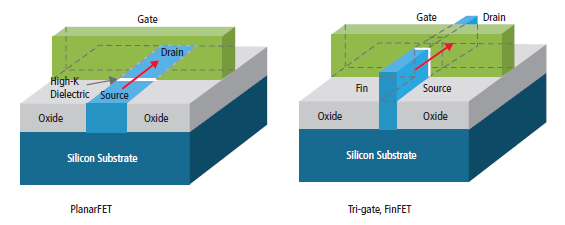
Lithography
.pull-left[
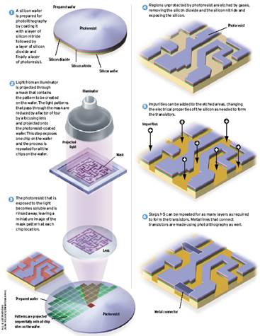
] .pull-right[
- Photo-resist coating
- Illumination
- Exposure
- Etching
- Impurities Doping
- Metal connection
]
Process-Design Gap
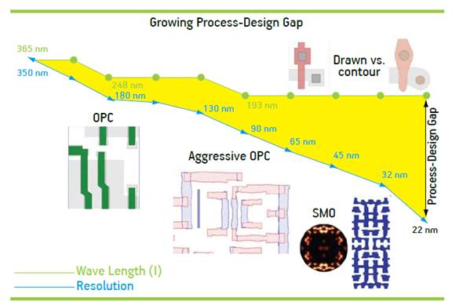
Problem Visualization
One of the main impacts of lithography is that it can cause variations in the dimensions and shapes of the IC's features, which can negatively impact the performance and yield of the IC. This is because lithography is a complex process that involves the use of light to transfer a pattern from a mask to a wafer. Variations in the intensity, wavelength, and angle of the light can cause deviations in the dimensions and shapes of the features, which can lead to process-induced variation.
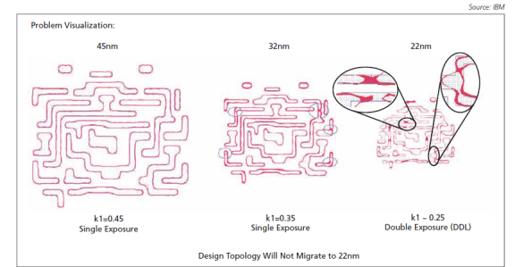
Chemical Mechanical Polishing
Chemical Mechanical Polishing (CMP) is a process used in semiconductor manufacturing to planarize the surface of a wafer. CMP is one of the steps involved in the fabrication of integrated circuits, specifically in the metal connection stage.
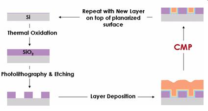
Chemical Mechanical Polishing
.pull-left[
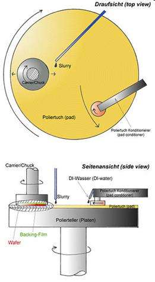
] .pull-right[
In terms of bridging the Process-Design Gap, CMP can help address the issue of process-induced variation by improving the uniformity of the wafer surface. This is important because process-induced variation can cause deviations in the dimensions and electrical properties of the transistors, which can negatively impact the performance and yield of the IC.
]
ECP & CMP
.pull-left[
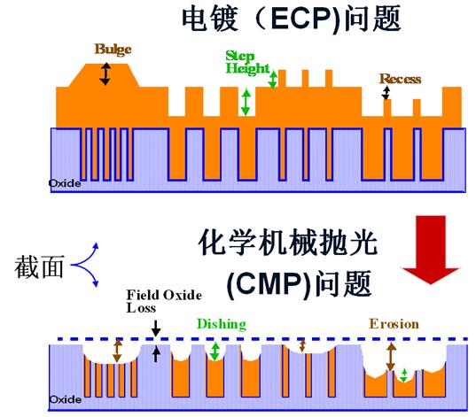
] .pull-right[
By using CMP to planarize the wafer surface, designers can reduce the variability in the thickness of the metal layers, which can improve the accuracy and consistency of the IC's electrical properties. This, in turn, can help bridge the Process-Design Gap by ensuring that the ICs are manufactured according to the intended design specifications.
]
count: false class: nord-light, middle, center
Process Variation
Total Thickness Variation Per Node
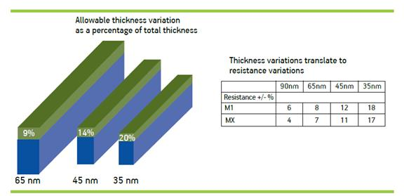
"Slippery Fish" at 45nm
- Process variation, impacting yield and performance
- More restricted design rules (RDRs)
- +3 or more rules at 45nm
- +100 or more rules at 32nm
- +250 or more rules at 22nm
- More rules implies larger die size, lower performance
- 10nm is not sci-fiction due to FinFET technology
count: false class: nord-light, middle, center
DFM
What is DFM?
- Design for 💰?
- Design for Manufacturing
- Design for Manufacturability
- Refer to a group of challenges less than 130nm
- The engineering practice of designing integrated circuits (ICs) to optimize their manufacturing ease and production cost given performance, power and reliability requirements
- A set of techniques to modify the design of ICs to improve their functional yield, parametric yield or their reliability
Why is it important?
- Achieving high-yielding designs in the state-of-the-art VLSI technology is extremely challenging due to the miniaturization and complexity of leading-edge products
- The manufacturing process becomes more sensitive to variations and defects, which can degrade the quality and functionality of the chips
- DFM can help to address various manufacturing issues, such as lithography hotspots, CMP dishing and erosion, antenna effects, electromigration, stress effects, layout-dependent effects and more
How is it applied?
- DFM can be applied to various aspects of IC design, such as circuit design, logic design, layout design, verification and testing
- Each aspect has its own specific DFM guidelines and best practices that designers should follow to ensure manufacturability
- For example, some general DFM guidelines for layout design are:
- Use regular and uniform layout structures
- Avoid narrow or long metal wires
- Avoid acute angles or jogs in wires
- Avoid isolated or floating features
- Use dummy fill to improve planarity and density uniformity
- Use recommended design rules and constraints from foundries
What are the benefits?
- By applying DFM techniques in the physical design stage of IC
development, designers can:
- Reduce the number of design iterations
- Improve the collaboration with foundries
- Enhance the product performance and functionality
- Achieve faster time to market and lower production costs
💹 DFM Market Share 2008
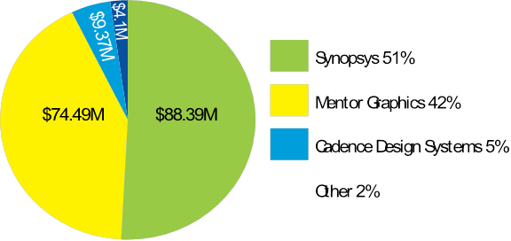
💹 DFM Forecast 2009 in $M
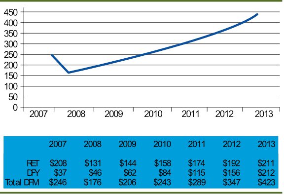
Increasing Importance of DFM
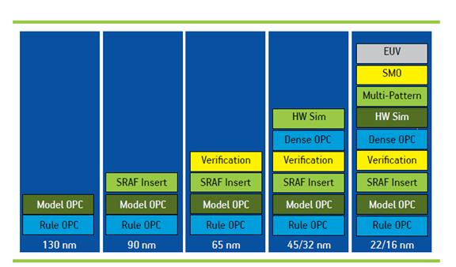
DFM Analysis and Verification
.pull-left[
- Critical area analysis
- CMP modeling
- Statistical timing analysis
- Pattern matching
- Lithography simulation
- Lithographic hotspot verification
] .pull-right[
]
2D Pattern Matching in DRC+
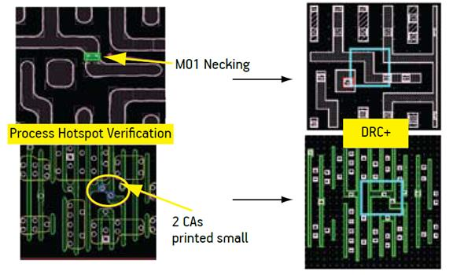
Contour Based Extraction
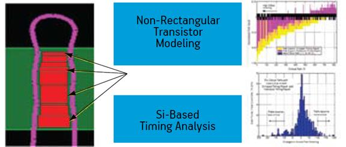
DFM Enhancement and Optimization
.pull-left[
- Wire spreading
- Dummy Filling
- Redundant Via Insertion
- Optical proximity correlation (OPC)
- Phase Shift Masking (PSM)
- Double/Triple/Multiple Patterning
- Statistical timing and power optimization
] .pull-right[
]
Dummy Filling
"Smart" Filling
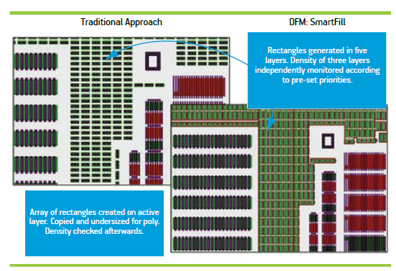
Redundant Via Insertion
- Also known as double via insertion.
- Post-routing RVI (many EDA tools already have this feature)
- Considering RVI during routing
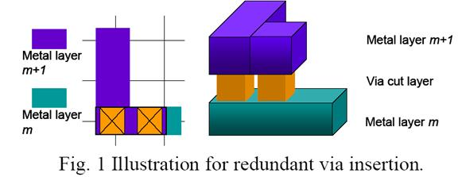
???
Looks good, right?
But actually only few people are using this!
Why?
Multiple Patterning (MPL)
- Instead of exposing the photoresist layer once under one mask, MPL exposes it twice by splitting the mask into "k" parts, each with features less dense.
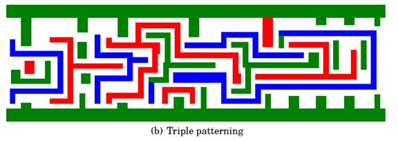
What are the challenges of DFM?
- DFM is not a fixed set of rules, but rather a flexible and evolving methodology that depends on the product requirements, the manufacturing technology and the industry standards
- DFM can also be combined with other design methodologies, such as DFT, DFR, DFLP and DFS, to create a holistic approach to product development
- DFM requires strong capabilities in research, supply chain, talent, IP protection and government policies
Course Structure
.pull-left[
- Describe the DFM problems that arise from.
- Abstract the problems in mathematical forms
- Describe the algorithms that solve the problems
- Discuss the alternative algorithms and possible improvement.
- Discuss if the algorithms can be applied to other area.
- Only describe the key idea in lectures. Details are left for paper reading if necessary.
] .pull-right[
]
🙈 Not covered
- Algorithms for 3D problems
- Packaging
- Machine Learning/AI Based algorithm
count: false class: nord-dark, middle, center
.pull-left[
Q & A 🙋️
] .pull-right[
]
Lecture 2a: Open-Source Software Development Flow
💬 Messages
- About 99% projects fail.
- Software is "soft"; Hardware is "hard"
- Automation is hard
- Nightly build concept (Microsoft)
- Agile software development
- Pair programming
- Extreme programming
- Opensource projects - Continuous Integration
Platforms
- https://github.com
- gitpod.io - ☁️ cloud base
- Github's Codespaces - ☁️ cloud base
- Lubuntu
- Windows - MSVC++
- FydeOS (ChromeOS) - g++-13
- Android's Termux - clang-17
Open-source Work Flow (Python)

Open-source Work Flow (C++)

Pull Request

GitHub, Git
git clone https://github.com/luk036/csdigit
cd csdigit
(edit)
git status
git diff
git diff README.md
git pull
git add .
git commit -m "message"
git push
git tag
git branch # list all branches
git branch develop # create a new branch
git switch develop
git switch master
GitHub, gh
gh repo create csdigit --public
gh repo clone csdigit
gh run list
gh run view
gh release list
gh release create
gh issue list
gh issue create
gh search repos digraphx
Python
- Create a new porject
pip install pyscaffold[all]
putup -i --markdown --github-actions csdigit
- ⚙️ Setup
cd csdigit
pip install -e .
pip install -r requirements.txt
- 🧪 Unit Testing
pytest
pytest --doctest-modules src
- ⛺ Code Coverage
pytest --cov=src/csdigit
Python
- 🪄 Formatting and static check
pip install pre-commit
pre-commit run --all-files
- 📝 Documentation
pip install -r docs/requirements.txt
cd docs
make html
python -m http.server
- 📊 Benchmarking
pytest benches/test_bench.py
Rust
- Create a new project
.font-sm.mb-xs[
cargo install cargo-generate
cargo generate -o --init --git https://github.com/rust-github/template.git
]
- ⚙️ Setup
cd csd-rs
cargo build
- 🧪 Unit Testing
cargo test
cargo test --lib
cargo test --doc
- ⛺ Code Coverage
cargo tarpaulin (Windows)
Rust
- 🪄 Formatting and static check
cargo fmt
cargo clippy
cargo clippy --fix
- 📝 Documentation
cargo doc
cd target/doc
python -m http.server
- 📊 Benchmarking
cargo bench
C++ (CMake + CPM)
-
Create a new project
Use GitHub's ModernCppStarter template,
-
⚙️ Setup
cd csd-cpp
cmake -Sall -Bbuild -DCMAKE_BUILD_TYPE=Release
cmake --build build
- 🧪 Unit Testing
cmake --build build --target test
- ⛺ Code Coverage
??
C++ (CMake + CPM)
- 🪄 Formatting and static check
pip install cmake-format clang-format
cmake -Sall -Bbuild -DCMAKE_BUILD_TYPE=Release
cmake --build build --target fix-format
- 📝 Documentation
cmake --build build --target GenerateDocs
- 📊 Benchmarking
./build/bench/BM_switch
C++ (XMake)
- Create a new project
xmake create -t static lds-cpp
xmake create -t console csd-cpp
- ⚙️ Setup
xmake f -m debug
xmake
- 🧪 Unit Testing
xmake run test_csd
- ⛺ Code Coverage
??
C++ (XMake)
- 🪄 Formatting and static check
xmake format
- 📝 Documentation
xmake doxygen
- 📊 Benchmarking
xmake run test_bench
Lecture 2b: Programming in the Age of AI 🤖
Coding Tips 💡
- Test, test, test!!!
- Write cleaner code
- Refactor repeat codes
- Object oriented programming
- Generic programming
- Design Pattern
- Coroutine is your friend
- Learn from good codes, not bad ones.
- The last rescue: Google search.
Code generation
- AWS CodeWhisperer (VSCode's extension)
- generate testing code
Documentation generation
Mintlify (VSCode's extension)
- Naming
- a, i, p, n ❌
- A x = b
- x: unknown, x_axis
- x, y, z
Use better variable names
- p: point, polygon, polynomial, prev
- t: time, target, temp
- c: cost, cycle, coefficient
- d: distance, distribution
- e: edge
- v: vertex
- u, v, w: vertex1, vertex2
- i: index
- i, j: row, col
- i, j, k
- l, m: line1, line2
- n: dimension, node, next
- n, m: ndim, mdim
- w: weight, frequence (omega)
🚀 Performance Tips 💡
- Avoid string comparison
- Use sentinel
- Use cheaper measure, avoid
sqrt(),sin(),cos() - Lazy evaluation
- Table lookup
- Avoid sequence search:
- Backward pointers
- Hash Table/Dictionary/Map
Avoid string comparison
.pull-left[
Bad 👎:
if pin == "input":
# ...
elif pin == "output":
# ...
elif pin == "in_out":
# ...
elif pin == "dont_care":
# ...
else:
# ...
]
.pull-right[
Better ⚡:
pin_type = dict({"input":0},
{"output":1}, {"in_out":2},
{"dont_care":3})
...
id = pin_type.get(pin, -1)
if id == 0:
# ...
elif id == 1:
# ...
elif id == 2:
# ...
elif id == 3:
# ...
else:
# ...
]
Use Sentinel
.pull-left[
Bad 👎:
.font-sm.mb-xs[
max = 0
bckt = [Dllist() for _ in range(high)]
# ...
def popleft():
res = bckt[max].popleft()
while max >= 0 and bckt[max].empty():
max -= 1
return res
]
] .pull-right[
Better ⚡:
.font-sm.mb-xs[
max = 0
sentinel = Dllink()
bckt = [Dllist() for _ in range(high+1)]
bckt[0].append(sentinel) # sentinel
# ...
def popleft():
res = bckt[max].popleft()
while bckt[max].empty():
max -= 1
return res
# Saved a boundary check `max >= 0`
]
]
Use cheaper measure
.pull-left[
Bad 👎:
mind = 10000
maxd = 0
for u, v in G.edges():
t = vec[u] - vec[v]
* d = sqrt(t.dot(t))
if mind > d: mind = d
if maxd < d: maxd = d
*return maxd - mind
] .pull-right[
Better ⚡:
minq = 10000
maxq = 0
for u, v in G.edges():
t = vec[u] - vec[v]
* q = t.dot(t)
if minq > q: minq = q
if maxq < q: maxq = q
*return sqrt(maxq) - sqrt(minq)
]
Another Example
.pull-left[
Bad 👎:
mind = 10000
maxd = 0
for u, v in G.edges():
* t = 1 - vec[u].dot(vec[v])
* d = arcsin(sqrt(t))
if mind > d: mind = d
if maxd < d: maxd = d
*return maxd - mind
] .pull-right[
Better ⚡:
minq = 10000
maxq = 0
for u, v in G.edges():
* q = 1 - vec[u].dot(vec[v])
if minq > q: minq = q
if maxq < q: maxq = q
*return arcsin(sqrt(maxq)) \
* - arcsin(sqrt(minq))
]
Optimization Tips 💡
-
Convex optimization
-
Network optimization
-
Primal-dual paradigm
Lecture 2c: Introduction to Convex Programming
@luk036
2023-09-27
📝 Abstract
This lecture provides an introduction to the convex programming and covers various aspects of optimization. The lecture begins with an overview of optimization, including linear and nonlinear programming, duality and convexity, and approximation techniques. It then delves into more specific topics within continuous optimization, such as linear programming problems and their standard form, transformations to standard form, and the duality of linear programming problems. The lecture also touches on nonlinear programming, discussing the standard form of an NLPP (nonlinear programming problem) and the necessary conditions of optimality known as the Karush-Kuhn-Tucker (KKT) conditions. Convexity is another important concept explored in the document, with explanations on the definition of convex functions and their properties. The lecture also discusses the duality of convex optimization problems and their usefulness in computation. Finally, the document briefly mentions various unconstrained optimization techniques, descent methods, and approximation methods under constraints.
🗺️ Overview
- Introduction
- Linear programming
- Nonlinear programming
- Duality and Convexity
- Approximation techniques
- Convex Optimization
- Books and online resources.
Classification of Optimizations
- Continuous
- Linear vs Non-linear
- Convex vs Non-convex
- Discrete
- Polynomial time Solvable
- NP-hard
- Approximatable
- Non-approximatable
- Mixed
Continuous Optimization
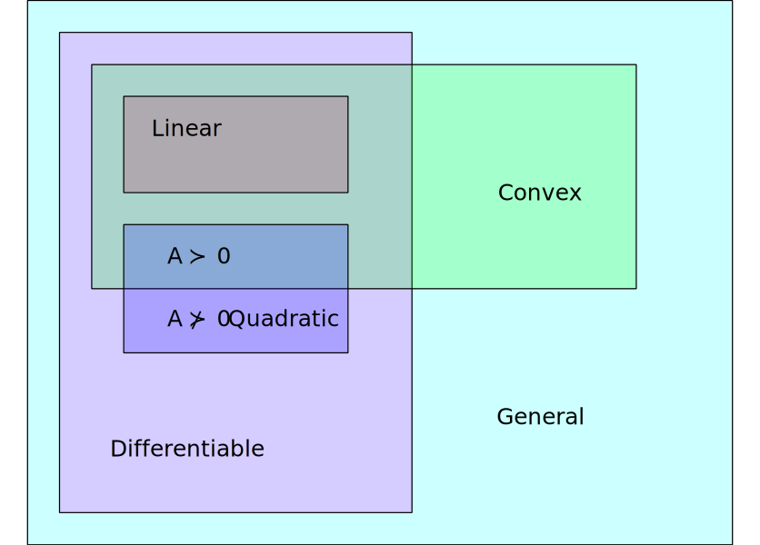
Linear Programming Problem
- An LPP in standard form is:
- The ingredients of LPP are:
- An matrix , with
- A vector
- A vector
Example
Transformations to Standard Form
- Theorem: Any LPP can be transformed into the standard form.
- Variables not restricted in sign:
- Decompose to two new variables
- Transforming inequalities into equalities:
- By putting slack variable
- Set
- Transforming a max into a min
- max(expression) = min(expression);
Duality of LPP
- If the primal problem of the LPP: .
- Its dual is: .
- If the primal problem is: .
- Its dual is: .
Nonlinear Programming
- The standard form of an NLPP is
- Necessary conditions of optimality, Karush- Kuhn-Tucker (KKT)
conditions:
- ,
- ,
Convexity
-
A function : is convex if is a convex set and .
-
Theorem: Assume that and are convex differentiable functions. If the pair satisfies the KKT conditions above, is an optimal solution of the problem. If in addition, is strictly convex, is the only solution of the problem.
(Local minimum = global minimum)
Duality and Convexity
-
Dual is the NLPP: where
-
Dual problem is always convex.
-
Useful for computing the lower/upper bound.
Applications
- Statistics
- Filter design
- Power control
- Machine learning
- SVM classifier
- logistic regression
class: nord-light, middle, center
Convexify the non-convex's
Change of curvature: square
Transform: into:
👉 Note that are monotonic concave functions in .
Generalization:
- Consider (power) instead of (magnitude).
- square root -> Spectral factorization
Change of curvature: square
Transform: into: Then:
Change of curvature: sine
Transform: into: Then:
👉 Note that are monotonic concave functions in .
Change of curvature: log
Transform: into: where .
Then:
Generalization:
- Geometric programming
Change of curvature: inverse
Transform: into:
Then:
👉 Note that , , and are monotonic functions.
Generalize to matrix inequalities
Transform: into:
Then:
Change of variables
Transform:
into: where .
Then:
Generalize to matrix inequalities
Transform:
into: where .
Then:
Some operations that preserve convexity
- is concave if and only if is convex.
- Nonnegative weighted sums:
- if and are all convex, then so is In particular, the sum of two convex functions is convex.
- Composition:
- If and are convex functions and is non-decreasing over a univariate domain, then is convex. As an example, if is convex, then so is because is convex and monotonically increasing.
- If is concave and is convex and non-increasing over a univariate domain, then is convex.
- Convexity is invariant under affine maps.
Other thoughts
- Minimizing any quasi-convex function subject to convex constraints can easily be transformed into a convex programming.
- Replace a non-convex constraint with a sufficient condition (such as its lower bound). Less optimal.
- Relaxation + heuristic
- Decomposition
Unconstraint Techniques
- Line search methods
- Fixed or variable step size
- Interpolation
- Golden section method
- Fibonacci's method
- Gradient methods
- Steepest descent
- Quasi-Newton methods
- Conjugate Gradient methods
General Descent Method
- Input: a starting point dom
- Output:
- repeat
- Determine a descent direction .
- Line search. Choose a step size .
- Update.
- until stopping criterion satisfied.
Some Common Descent Directions
- Gradient descent:
- Steepest descent:
- = argmin
- = (un-normalized)
- Newton's method:
- Conjugate gradient method:
- is "orthogonal" to all previous 's
- Stochastic subgradient method:
- is calculated from a set of sample data (instead of using all data)
- Network flow problems:
- is given by a "negative cycle" (or "negative cut").
Approximation Under Constraints
- Penalization and barriers
- Dual method
- Interior Point method
- Augmented Lagrangian method
📚 Books and Online Resources
- Pablo Pedregal. Introduction to Optimization, Springer. 2003 (O224 P371)
- Stephen Boyd and Lieven Vandenberghe, Convex Optimization, Dec. 2002
- Mittlemann, H. D. and Spellucci, P. Decision Tree for Optimization Software, World Wide Web, http://plato.la.asu.edu/guide.html, 2003
Non-Parametric Spatial Correlation Estimation
Abstract
This lecture discusses non-parametric spatial correlation estimation and its importance in analyzing the variability in semiconductor devices. The intra-die variation in these devices can exhibit spatially correlated patterns, which require accurate statistical analysis during the design stage. Anisotropic models are used to allow for variations in gate length, which exhibit stronger correlation in the horizontal direction than the vertical direction. Non-parametric approaches make sense for correlation functions, as earlier studies that used parametric forms were limited by the assumptions made about the correlation function. This lecture goes on to describe random fields and the properties of correlation functions before diving into problem formulation and solutions using maximum likelihood estimation and least squares estimation.
🗺️ Overview
- Motivation:
- Why is spatial correlation important?
- Why anisotropic models?
- Why do non-parametric approaches make sense?
- Problem Formulation
- Non-parametric estimation
- Least squares estimation
- Maximum Likelihood estimation
- Numerical experiment
- Conclusion
Why Spatial Correlation?
- As the minimum feature size of semiconductor devices continues to shrink,
- Process variations are inevitable. It is desirable to develop more accurate statistical analysis during the design stage.
- Intra-die variation exceeds inter-die variation
- Becomes dominant over total process variation
- Often exhibits spatially correlated patterns.
- Applications:
- Statistical timing analysis -> Clock Skew Scheduling
- Power/leakage minimization
Why Anisotropic Model?
- Isotropic assumption assumes that the correlation depends only on the distance between two random variables. It was made to simplify the computation.
- Certain variations, such variations in gate length, exhibit significantly stronger correlation in the horizontal direction than in the vertical direction.
Why Non-Parametric Approaches?
- In earlier studies, the parametric form of the correlation function was simple, such as an exponential, Gaussian or Matérn function:
- Pros: guaranteed to be positive definite.
- Cons:
- non-convex; may be stuck in a local minimum
- The actual correlation function may not necessarily be of this form.
- isotropic model
Related research
- Piecewise linearization method (imprecise, not positive definite)
- Parametric method (non-convex, too smooth, isotropic)
- Exponential function
- Gaussian function
- Matérn function
- Non-parametric method
- Polynomial fitting
- B-spline
Random Field
- Random field is an indexed family of random variables denote as , where
- Covariance = =
- Correlation
- The field is stationary, or homogeneous, if the distribution is unchanged when the point set is translated.
- The field is isotropic if the distribution is invariant under any rotation.
- In HIF, let :
Properties of Correlation Function
- Even function, i.e. its Fourier transform is real.
- Positive definiteness (PD) its Fourier transform is positive (Bochner's theorem).
- Monotonicity: correlations are decreasing against 🤔
- Nonnegativeness: no negative correlation 🤔
- Discontinuity at the origin: nugget effect.
The nugget effect refers to the discontinuity at the origin in the correlation function of spatially correlated patterns. It indicates the presence of a small, non-zero correlation value between points that are very close to each other. In other words, it represents the variance component that cannot be explained by spatial correlation and is attributed to purely random variation.
Problem Formulation
- Intra-die variation
- : deterministic component
- : correlated random component
- : purely random component
- Given samples .
- Measured covariance matrix :
- (unlikely PD)
- In MATLAB, simply call
cov(Zs',1)to obtain . - In Python, simple call
np.cov(Zs, bias=True)to obtain .
Nearest PD Matrix Problem
- Given . Find a nearest matrix that is positive definite. where denotes the Frobenius norm, denotes is positive semidefinite.
- 👉 Note:
- the problem is convex 😃
- the problem can be solved easily using CVX 😃
Maximum Likelihood Estimation
- Maximum likelihood estimation (MLE): where denotes the trace of .
- 👉 Note: 1st term is concave 😭, 2nd term is convex
Maximum Likelihood Estimation (cont'd)
- Having , the problem becomes convex 😃:
- 👉 Note: the problem can be solved easily using MATLAB with the CVX package, or using Python with the cvxpy package.
Matlab Code of CVX
function Sig = log_mle_solver(Y);
ndim = size(Y,1);
cvx_quiet(false);
cvx_begin sdp
variable S(ndim, ndim) symmetric
maximize(log_det(S) - trace(S*Y))
subject to
S >= 0;
cvx_end
Sig = inv(S);
Python Code
from cvxpy import *
from scipy import linalg
def mle_corr_mtx(Y):
ndim = len(Y)
S = Semidef(ndim)
prob = Problem(Maximize(log_det(S) - trace(S*Y)))
prob.solve()
if prob.status != OPTIMAL:
raise Exception('CVXPY Error')
return linalg.inv(S.value)
Correlation Function (I)
-
Let , where
- 's are the unknown coefficients to be fitted
- 's are a family of basis functions.
-
Let .
-
The covariance matrix can be recast as:
-
Note 1: affine transformation preserved convexity
-
Note 2: inverse of matrix unfortunately cannot be expressed in convex form.
Correlation Function (II)
- Choice of :
- Polynomial :
- Easy to understand 👍
- No guarantee of monotonicity; unstable for higher-order polynomials.
- B-spline function
- Shapes are easier to control 👍
- No guarantee of positive definite 👎
- Polynomial :
Correlation Function (III)
- To ensure that the resulting function is PD, additional constraints can be imposed according to Bochner's theorem, e.g.:
- real(FFT())
Bochner's theorem states that a continuous function is a valid covariance function if and only if its Fourier transform is a non-negative measure. In other words, a function can be a valid covariance function if and only if its Fourier transform is positive definite. This theorem is important in spatial statistics because it provides a way to check whether a given covariance function is valid or not.
Non-Parametric Estimation
-
Least squares estimation 👉 Note: convex problem 😃
-
Maximum likelihood estimation (MLE): 👉 Note:
- The 1st term is concave 😭, the 2nd term is convex
- However, the problem is geodesically convex.
- If enough samples are available, then . Furthermore, the MLE is a convex problem in
Isotopic Case I
.pull-left[
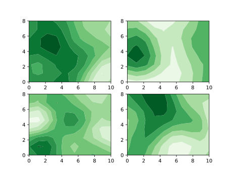
: Data Sample
] .pull-right[
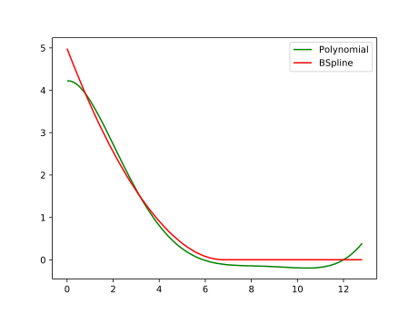
: Least Square Result
]
Isotopic Case II
.pull-left[
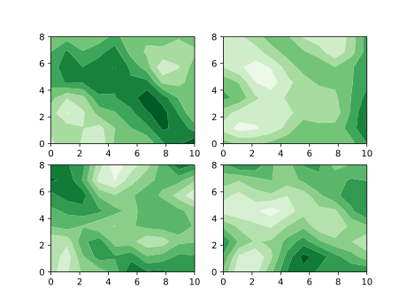
: Data Sample
] .pull-right[
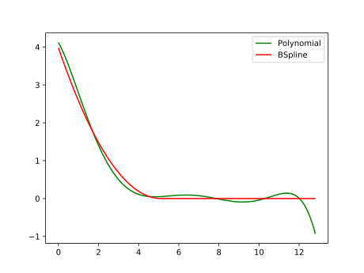
: Least Square Result
]
Convex Concave Procedure
- Let . Log-likelihood function is:
- Convexify the first term using the fact:
- minimize:
- At each iteration , the following convex problem is solved: 👉 Note: Convergence to an optimal solution is not guaranteed, but is practically good.
MATLAB Code
% Geometric anisotropic parameters
alpha = 2; % scaling factor
theta = pi/3; % angle
Sc = [1 0; 0 alpha];
R = [sin(theta) cos(theta); -cos(theta) sin(theta)];
T = Sc*R;
Sig = ones(n,n);
for i=1:n-1,
for j=i+1:n,
dt = s(j,:)' - s(i,:)';
d = T*dt; % become isotropic after the location transformation
Sig(i,j) = exp(-0.5*(d'*d)/(sdkern*sdkern)/2);
Sig(j,i) = Sig(i,j);
end
end
Anisotopic Data
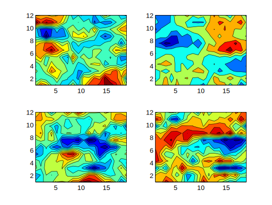
Isotropic Result
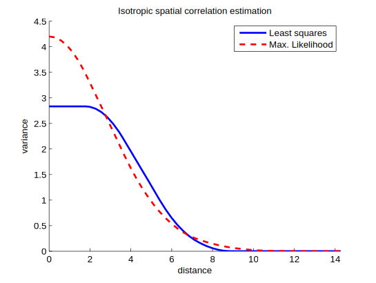
Anisotropic Result

Future Work
- Porting MATLAB code to Python
- Real data, not computer generated data
- Barycentric B-spline.
- Sampling method optimization.
Lecture 4: Robust Analog Circuit Sizing Under Process Variations
@luk036
2022-10-12
🔑 Keywords
- Analog circuit 模拟电路
- Design for robustness 鲁棒性设计
- Worst-case scenarios 最坏情景
- Affine arithmetic 仿射运算
- Convex programming 凸规划
- Geometric programming 几何规划
- Posynomial 正项式 (Positive + polynomial)
- Ellipsoid method 椭球法
🗺️ Overview
-
Challenges of 20nm Analog Design
-
Design for variability
-
Design for robustness
-
Analog circuit sizing problem formulation
-
Robust geometric programming
-
Affine arithmetic for worst case scenarios
-
Design examples
📖 Introduction
| Costs | 28nm | 20nm |
|---|---|---|
| Fab Costs | 3B | 4B - 7B |
| Process R&D | 1.2B | 2.1B - 3B |
| Mask Costs | 2M - 3M | 5M - 8M |
| Design Costs | 50M - 90M | 120M - 500M |
: Fab, process, mask, and design costs are much higher at 20nm (IBS, May 2011)
Challenges at 20 nm
-
Double-patterning aware
-
Layout-dependent effects
-
New local interconnect layers
-
>5,000 design rules
-
Device variation and sensitivity
-
New type of transistor - FinFET
Double Patterning
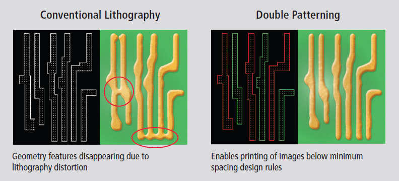
Overlay Error (Mask Shift)
-
Parasitic matching becomes very challenging
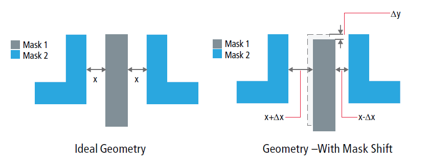
Layout-Dependent Effects
| Layout-Dependent Effects | > 40nm | At 40nm | >= 28nm |
|---|---|---|---|
| Well Proximity Effect (WPE) | x | x | x |
| Poly Spacing Effect (PSE) | x | x | |
| Length of Diffusion (LOD) | x | x | x |
| OD to OD Spacing Effect (OSE) | x | x |
New Local Interconnect Layers
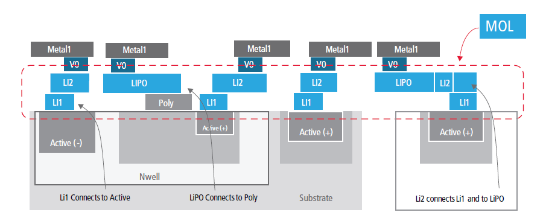
New Transistor Type: FinFET
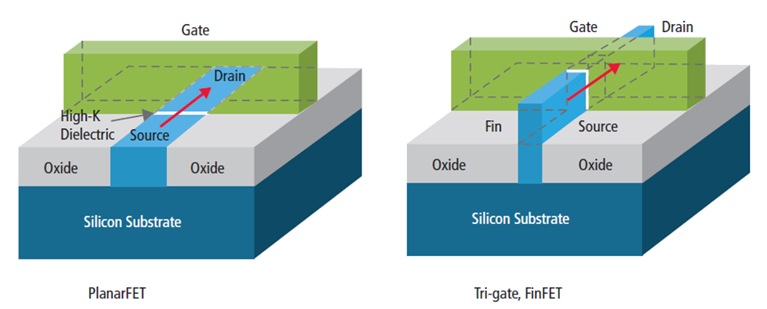
Design for Robustness
- Process variations must be included in the specification.
Basic Design Flow
.pull-left70[
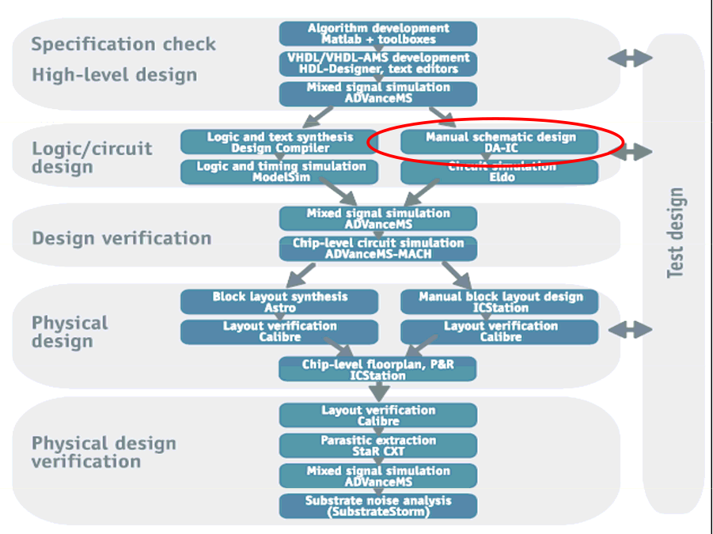
]
Top-down Design Phases
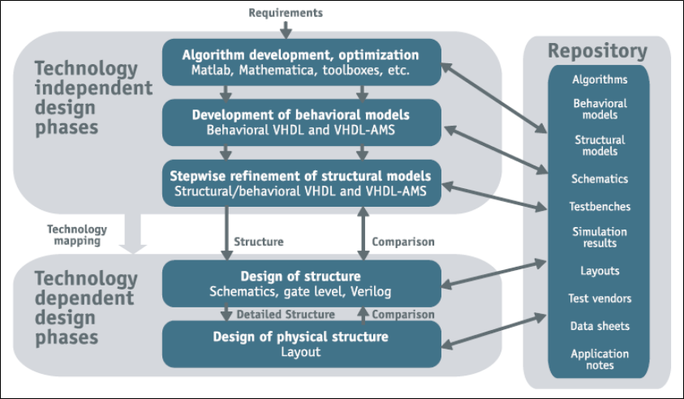
Basic Flow of Analog Synthesis
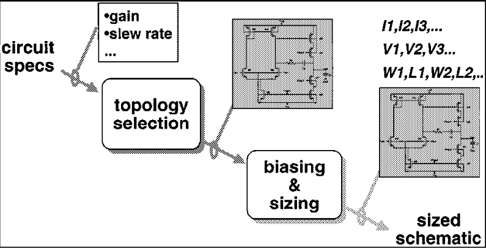
Analog Circuit Sizing Problem
- Problem definition:
- Given a circuit topology, a set of specification requirements and technology, find the values of design variables that meet the specifications and optimize the circuit performance.
- Difficulties:
- High degrees of freedom
- Performance is sensitive to variations
Main Approaches in CAD
- Knowledge-based
- Rely on circuit understanding, design heuristics
- Optimization based
- Equation based
- Establish circuit equations and use numerical solvers
- Simulation based
- Rely on circuit simulation
- Equation based
In practice, you mix and match of them whenever appropriate.
Geometric Programming
- In recent years, techniques of using geometric programming (GP) are emerging.
- In this lecture, we present a new idea of solving robust GP problems using ellipsoid method and affine arithmetic.
Lecture 04b - Robust Geometric Programming
Outline
- Problem Definition for Robust Analog Circuit Sizing
- Robust Geometric Programming
- Affine Arithmetic
- Example: CMOS Two-stage Op-Amp
- Numerical Result
- Conclusions
Robust Analog Circuit Sizing Problem
- Given a circuit topology and a set of specification requirements:
.font-sm.mb-xs[
| Constraint | Spec. | Units |
|---|---|---|
| Device Width | m | |
| Device Length | m | |
| Estimated Area | minimize | m |
| CMRR | dB | |
| Neg. PSRR | dB | |
| Power | mW |
]
- Find the worst-case design variable values that meet the specification requirements and optimize circuit performance.
Robust Optimization Formulation
- Consider where
- represents a set of design variables (such as , ),
- represents a set of varying parameters (such as )
- represents the th specification requirement (such as phase margin ).
Geometric Programming in Standard Form
- We further assume that 's are convex for all .
- Geometric programming is an optimization problem that takes the following standard form:
where
- 's are posynomial functions and 's are monomial functions.
Posynomial and Monomial Functions
- A monomial function is simply:
where
- is non-negative and .
- A posynomial function is a sum of monomial functions:
- A monomial can also be viewed as a special case of posynomial where there is only one term of the sum.
Geometric Programming in Convex Form
- Many engineering problems can be formulated as a GP.
- On Boyd's website there is a Matlab package "GGPLAB" and an excellent tutorial material.
- GP can be converted into a convex form by changing the variables and replacing with :
where
Robust GP
- GP in the convex form can be solved efficiently by interior-point methods.
- In robust version, coefficients are functions of .
- The robust problem is still convex. Moreover, there is an infinite number of constraints.
- Alternative approach: Ellipsoid Method.
Example - Profit Maximization Problem
This example is taken from [@Aliabadi2013Robust].
- : Cobb-Douglas production function
- : the market price per unit
- : the scale of production
- : the output elasticities
- : input quantity
- : output price
- : a given constant that restricts the quantity of
Example - Profit maximization (cont'd)
- The formulation is not in the convex form.
- Rewrite the problem in the following form:
Profit maximization in Convex Form
-
By taking the logarithm of each variable:
- , .
-
We have the problem in a convex form:
.font-sm.mb-xs[
class profit_oracle:
def __init__(self, params, a, v):
p, A, k = params
self.log_pA = np.log(p * A)
self.log_k = np.log(k)
self.v = v
self.a = a
def __call__(self, y, t):
fj = y[0] - self.log_k # constraint
if fj > 0.:
g = np.array([1., 0.])
return (g, fj), t
log_Cobb = self.log_pA + self.a @ y
x = np.exp(y)
vx = self.v @ x
te = t + vx
fj = np.log(te) - log_Cobb
if fj < 0.:
te = np.exp(log_Cobb)
t = te - vx
fj = 0.
g = (self.v * x) / te - self.a
return (g, fj), t
]
.font-sm.mb-xs[
# Main program
import numpy as np
from ellpy.cutting_plane import cutting_plane_dc
from ellpy.ell import ell
from .profit_oracle import profit_oracle
p, A, k = 20., 40., 30.5
params = p, A, k
alpha, beta = 0.1, 0.4
v1, v2 = 10., 35.
a = np.array([alpha, beta])
v = np.array([v1, v2])
y0 = np.array([0., 0.]) # initial x0
r = np.array([100., 100.]) # initial ellipsoid (sphere)
E = ell(r, y0)
P = profit_oracle(params, a, v)
yb1, ell_info = cutting_plane_dc(P, E, 0.)
print(ell_info.value, ell_info.feasible)
]
Example - Profit Maximization Problem (convex)
- Now assume that:
- and vary and respectively.
- , , , and all vary .
Example - Profit Maximization Problem (oracle)
By detail analysis, the worst case happens when:
- ,
- , ,
- if , , else
- if , , else
class profit_rb_oracle:
def __init__(self, params, a, v, vparams):
e1, e2, e3, e4, e5 = vparams
self.a = a
self.e = [e1, e2]
p, A, k = params
params_rb = p - e3, A, k - e4
self.P = profit_oracle(params_rb, a, v + e5)
def __call__(self, y, t):
a_rb = self.a.copy()
for i in [0, 1]:
a_rb[i] += self.e[i] if y[i] <= 0 else -self.e[i]
self.P.a = a_rb
return self.P(y, t)
Oracle in Robust Optimization Formulation
- The oracle only needs to determine:
- If for some and ,
then
- the cut =
- If for some
, then
- the cut =
- Otherwise, is feasible, then
- Let .
- .
- The cut =
- If for some and ,
then
Remark:
- for more complicated problems, affine arithmetic could be used [@liu2007robust].
Lecture 04c - Affine Arithmetic
A Simple Area Problem
- Suppose the points , and vary within the region of 3 given rectangles.
- Q: What is the upper and lower bound on the area of ?
.pull-right[
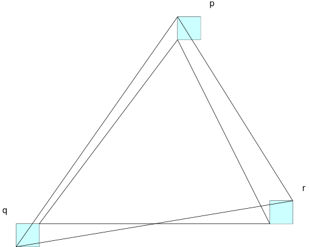
]
Method 1: Corner-based
- Calculate all the areas of triangles with different corners.
- Problems:
- In practical applications, there may be many corners.
- What's more, in practical applications, the worst-case scenario may not be at the corners at all.
Method 2: Monte Carlo
- Monte-Carlo or Quasi Monte-Carlo:
- Calculate the area of triangles for different sampling points.
- Advantage: more accurate when there are more sampling points.
- Disadvantage: time consuming
class: center, middle
Interval Arithmetic vs. Affine Arithmetic
Method 3: Interval Arithmetic
- Interval arithmetic (IA) estimation:
- Let px = [2, 3], py = [3, 4]
- Let qx = [-5, -4], qy = [-6, -5]
- Let rx = [6, 7] , ry = [-5, -4]
- Area of triangle:
- = ((qx - px)(ry - py) - (qy - py)(rx - px))/2
- = [33 .. 61] (actually [36.5 .. 56.5])
- Problem: cannot handle correlation between variables.
Method 4: Affine Arithmetic
- (Definition to be given shortly)
- More accurate estimation than IA:
- Area = [35 .. 57] in the previous example.
- Take care of first-order correlation.
- Usually faster than Monte-Carlo, but ....
- becomes inaccurate if the variations are large.
- libaffa.a/YALAA package is publicly available:
- Provides functuins like +, -, *, /, sin(), cos(), pow() etc.
Analog Circuit Example
- Unit Gain bandwidth
GBW = sqrt(A*Kp*Ib*(W2/L2)/(2*pi*Cc)where some parameters are varying
Enabling Technologies
-
C++ template and operator overloading features greatly simplify the coding effort:
-
E.g., the following code can be applied to both
<double>and<AAF>:template <typename Tp> Tp area(const Tp& px, const Tp& qx, const Tp& rx, const Tp& py, const Tp& qy, const Tp& ry) { return ((qx-px)*(ry-py) - (qy-py)*(rx-px)) / 2; } -
In other words, some existing code can be reused with minimal modification.
Applications of AA
- Analog Circuit Sizing
- Worst-Case Timing Analysis
- Statistical Static Timing Analysis
- Parameter Variation Interconnect Model Order Reduction [CMU02]
- Clock Skew Analysis
- Bounded Skew Clock Tree Synthesis
Limitations of AA
- Something AA can't replace
<double>:- Iterative methods (no fixed point in AA)
- No Multiplicative inverse operation (no LU decomposition)
- Not total ordering, can't sort (???)
- AA can only handle linear correlation, which means you can't expect an accurate approximation of
abs(x)near zero. - Fortunately the ellipsoid method is one of the few algorithms that works with AA.
Circuit Sizing for Op. Amp.
- Geometric Programming formulation for CMOS Op. Amp.
- Min-max convex programming under Parametric variations (PVT)
- Ellipsoid Method
What is Affine Arithmetic?
- Represents a quantity x with an affine form (AAF):
where
- noise symbols
- central value
- partial deviations
- is not fixed - new noise symbols are generated during the computation process.
- IA -> AA :
Geometry of AA
.pull-left70[
- Affine forms that share noise symbols are dependent:
- The region containing (x, y) is:
- This region is a centrally symmetric convex polygon called "zonotope".
] .pull-right30[
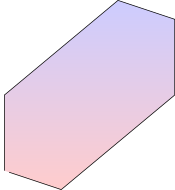
]
Affine Arithmetic
How to find efficiently?
- is in general difficult to obtain.
- Provided that variations are small or nearly linear, we propose using Affine Arithmetic (AA) to solve this problem.
- Features of AA:
- Handle correlation of variations by sharing noise symbols.
- Enabling technology: template and operator overloading features of C++.
- A C++ package "YALAA" is publicly available.
Affine Arithmetic for Worst Case Analysis
- An uncertain quantity is represented in an affine form (AAF):
where
- is called noise symbol.
- Exact results for affine operations (, and )
- Results of non-affine operations (such as , , ) are approximated in an affine form.
- AA has been applied to a wide range of applications recently when process variations are considered.
Affine Arithmetic for Optimization
In our robust GP problem:
- First, represent every elements in in affine forms.
- For each ellipsoid iteration, is obtained by approximating in an affine form:
- Then the maximum of is determined by:
.pull-left70[
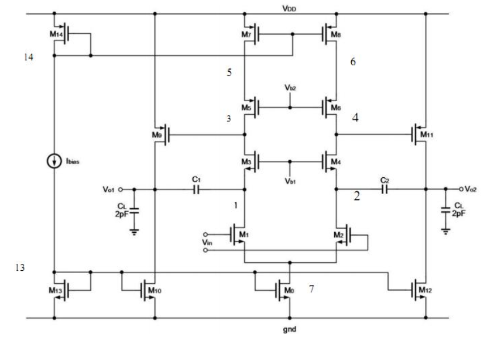
]
Performance Specification
.column-2.font-sm.mb-xs[
| Constraint | Spec. | Units |
|---|---|---|
| Device Width | m | |
| Device Length | m | |
| Estimated Area | minimize | m |
| Input CM Voltage | x | |
| Output Range | x | |
| Gain | dB | |
| Unity Gain Freq. | MHz | |
| Phase Margin | degree | |
| Slew Rate | V/s | |
| CMRR | dB | |
| Neg. PSRR | dB | |
| Power | mW | |
| Noise, Flicker | nV/Hz |
]
Open-Loop Gain (Example)
-
Open-loop gain can be approximated as a monomial function:
where and are monomial functions.
-
Corresponding C++ code fragment:
// Open Loop Gain monomial<aaf> OLG = 2*COX/square(LAMBDAN+LAMBDAP)* sqrt(KP*KN*W[1]/L[1]*W[6]/L[6]/I1/I6);
Results of Design Variables
.column-2.font-sm.mb-xs[
| Variable | Units | GGPLAB | Our | Robust |
|---|---|---|---|---|
| m | 44.8 | 44.9 | 45.4 | |
| m | 3.94 | 3.98 | 3.8 | |
| m | 2.0 | 2.0 | 2.0 | |
| m | 2.0 | 2.0 | 2.1 | |
| m | 1.0 | 1.0 | 1.0 | |
| m | 1.0 | 1.0 | 1.0 | |
| m | 1.0 | 1.0 | 1.0 | |
| m | 1.0 | 1.0 | 1.0 | |
| N/A | 10.4 | 10.3 | 12.0 | |
| N/A | 61.9 | 61.3 | 69.1 | |
| pF | 1.0 | 1.0 | 1.0 | |
| A | 6.12 | 6.19 | 5.54 |
]
Performances
.font-sm.mb-xs[
| Performance (units) | Spec. | Std. | Robust | | ------------------------------ | ------------ | ------------ | ------------ | | Estimated Area (m) | minimize | 5678.4 | 6119.2 | | Output Range (x ) | [0.1, 0.9] | [0.07, 0.92] | [0.07, 0.92] | | Comm Inp Range (x ) | [0.45, 0.55] | [0.41, 0.59] | [0.39, 0.61] | | Gain (dB) | | 80 | [80.0, 81.1] | | Unity Gain Freq. (MHz) | | 50 | [50.0, 53.1] | | Phase Margin (degree) | | 86.5 | [86.1, 86.6] | | Slew Rate (V/s) | | 64 | [66.7, 66.7] | | CMRR (dB) | | 77.5 | [77.5, 78.6] | | Neg. PSRR (dB) | | 83.5 | [83.5, 84.6] | | Power (mW) | | 1.5 | [1.5, 1.5] | | Noise, Flicker (nV/Hz) | | | [578, 616] |
]
Conclusions
- Our ellipsoid method is fast enough for practical analog circuit sizing (take < 1 sec. running on a 3GHz Intel CPU for our example).
- Our method is reliable, in the sense that the solution, once produced, always satisfies the specification requirement in the worst case.
Comments
- The marriage of AA (algebra) and Zonotope (geometry) has the potential to provide us with a powerful tool for algorithm design.
- AA does not solve all problems. E.g. Iterative method does not apply to AA because AA is not in the Banach space (the fixed-point theorem does not hold).
- AA * and + do not obey the laws of distribution (c.f. floating-point arithmetic)
- AA can only perform first-order approximations. In other words, it can only be applied to nearly linear variations.
- In practice, we still need to combine AA with other methods, such as statistical method or the (quasi-) Monte Carlo method.
Lecture 05a - ⏳ Clock Skew Scheduling Under Process Variations
@luk036
2022-10-19
🔑 Keywords
- Static timing analysis, STA 静态时序分析
- Statistical STA 统计静态时序分析
- Clock skew 时钟偏差/偏斜
- Zero skew design 零偏差设计
- Critical paths 关键路径
- Negative slack 负时序裕量
- Useful skew design 有效偏差设计
- Critical cycles 关键环
- Negative cycles 负环
- Clock skew scheduling ⏳ (CSS) 时钟偏差安排/规划
- Yield-driven CSS 产品率驱动时钟偏差安排
🗺️ Overview
-
Background
-
Problem formulation
-
Traditional clock skew scheduling ⏳
-
Yield-driven clock skew scheduling ⏳
-
Minimum cost-to-time ratio formulation
Sequential Logic
-
Local data path
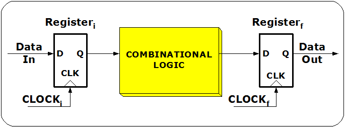
Sequential Logic (cont'd)
-
Graph
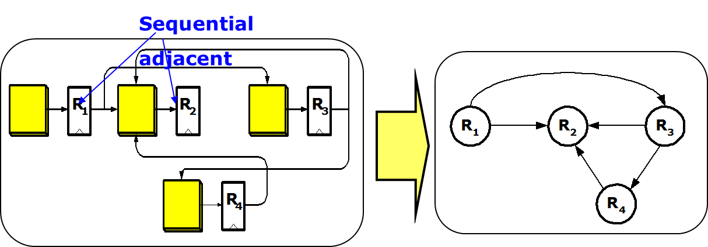
Clock Skew
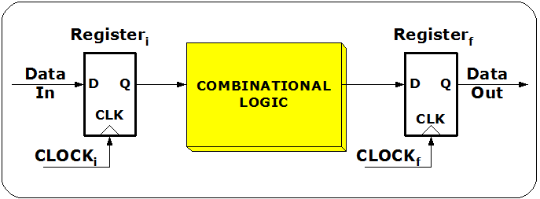
- , where
- : clock signal delay at the initial register
- : clock signal delay at the final register
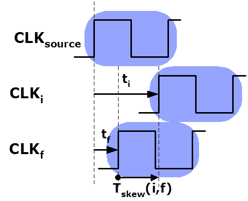
Timing Constraint
-
Setup time constraint While this constraint destroyed, cycle time violation (zero clocking) occurs.
-
Hold time constraint While this constraint destroyed, race condition (double clocking) occurs.
Zero skew vs. Useful skew
-
Zero skew () : Relatively easy to implement.
-
Useful skew. Improve:
- The performance of the circuit by permitting a higher maximum clock frequency, or
- The safety margins of the clock skew within the permissible ranges.
-
Max./min. path delays are got from static timing analysis (STA).
Timing Constraint Graph
- Create a graph by
- replacing the hold time constraint with a h-edge with cost from to , and
- replacing the setup time constraint with an s-edge with cost from to .
- Two sets of constraints stemming from clock skew definition:
- The sum of skews for paths having the same starting and ending flip-flop to be the same;
- The sum of clock skews of all cycles to be zero
Timing Constraint Graph (TCG)
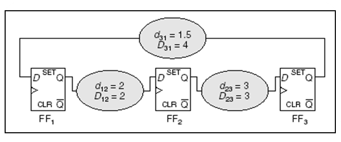
Timing Constraint Graph (TCG)
Assume = 0
Clock period is feasible if and only if current graph contains no negative cost cycles.
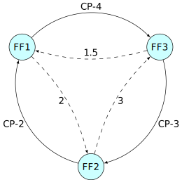
Minimize Clock Period
-
Linear programming (LP) formulation where and are sequential adjacent
-
The above constraint condition is so-called system of difference constraints (see Introduction to Algorithms, MIT):
-
👉 Note: easy to check if a feasible solution exists by detecting negative cycle using for example Bellman-Ford algorithm.
Basic Bellman-Ford Algorithm
.font-sm.mb-xs[
function BellmanFord(list vertices, list edges, vertex source)
// Step 1: initialize graph
for each vertex i in vertices:
if i is source then u[i] := 0
else u[i] := inf
predecessor[i] := null
// Step 2: relax edges repeatedly
for i from 1 to size(vertices)-1:
for each edge (i, j) with weight d in edges:
* if u[j] > u[i] + d[i,j]:
* u[j] := u[i] + d[i,j]
* predecessor[j] := i
// Step 3: check for negative-weight cycles
for each edge (i, j) with weight d in edges:
if u[j] > u[i] + d[i,j]:
error "Graph contains a negative-weight cycle"
return u[], predecessor[]
]
Problems with Bellman-Ford Algorithm
- The algorithm is originally used for finding the shortest paths.
- Detecting negative cycle is just a side product of the algorithm.
- The algorithm is simple, but...
- detects negative cycle at the end only.
- has to compute all
d[i,j]. - Restart the initialization with
u[i] := inf. - requests the input graph must have a source node.
Various improvements have been proposed extensively.
Minimize clock period (I)
- Fast algorithm for solving the LP:
- Use binary search method for finding the minimum clock period.
- In each iteration, Bellman-Ford algorithm is called to detect if the timing constraint graph contains negative weighted edge cycle.
- 👉 Note: Originally Bellman-Ford algorithm is used to find a shortest-path of a graph.
Minimize clock period (II)
-
When the optimal clock period is solved, the corresponding skew schedule is got simultaneously.
-
However, many skew values are on the bounds of feasible range.
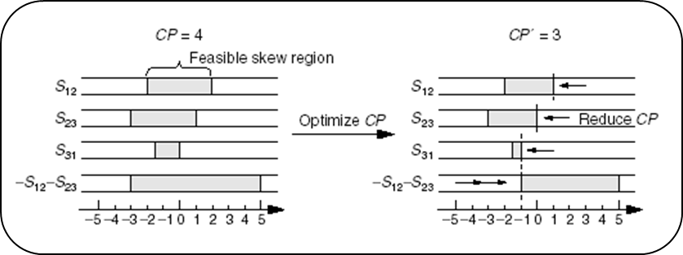
Yield-driven Clock Skew Scheduling
-
When process variations increase more and more, timing-failure-induced yield loss becomes a significant problem.
-
Yield-driven Clock Skew Scheduling becomes important.
-
Primary goal of this scheduling is to minimize the yield loss instead of minimizing the clock period.
Timing Yield Definition
-
The circuit is called functionally correct if all the setup- and hold-time constraints are satisfied under a group of determinate process parameters.
-
Timing Yield = (functional correct times) / sample number * 100%
Primitive solution (1)
-
Pre-allocate timing margins (usually equivalent to maximum timing uncertainty) at both ends of the FSR's (Feasible Skew Region).
-
Then perform clock period optimization.
Problems with this method
-
The maximum timing uncertainty is too pessimistic. Lose some performance;
-
is fixed; it does not consider data path delay differences between cycle edges.
📑 References (1)
-
"Clock skew optimization", IEEE Trans. Computers, 1990
-
"A graph-theoretic approach to clock skew optimization", ISCAS'94
-
"Cycle time and slack optimization for VLSI-chips", ICCAD'99
-
"Clock scheduling and clocktree construction for high performance Asics", ICCAD'03
-
"ExtensiveSlackBalance: an Approach to Make Front-end Tools Aware of Clock Skew Scheduling", DAC'06
Primitive solution (2)
-
Formulate as LCES (Least Center Error Square) problem
- A simple observation suggests that, to maximize slack, skew values should be chosen as close as possible to the middle points of their FSR's.
📑 References (2)
- Graph-based algorithm
- (J. L. Neves and E. G. Friedman, "Optimal Clock Skew Scheduling Tolerant to Process Variations", DAC'96)
- Quadratic Programming method
- (I. S. Kourtev and E. G. Fredman, "Clock skew scheduling ⏳ for improved reliability via quadratic programming", ICCAD'99)
Shortcoming: might reduce some slacks to be zero to minimum total CES. This is not optimal for yield.
Primitive solution (3)
-
Incremental Slack Distribution
- (Xinjie Wei, Yici CAI and Xianlong Hong, "Clock skew scheduling ⏳ under process variations", ISQED'06)
-
Advantage: check all skew constraints
-
Disadvantage: didn't take the path delay difference into consideration
Minimum Mean Cycle Based
-
Even: solve the slack optimization problem using a minimum mean cycle formulation.
-
Prop: distribute slack along the most timing-critical cycle proportional to path delays
-
FP-Prop: use sensitizable-critical-path search algorithm for clock skew scheduling.
Slack Maximization (EVEN)
-
Slack Maximization Scheduling
-
Equivalent to the so-called minimum mean cycle problem (MMC), where : critical cycle (first negative cycle)
-
Can be solved efficiently by the above method.
Even - iterative slack optimization
-
Identify the circuit's most timing-critical cycle,
-
Distribute the slack along the cycle,
-
Freeze the clock skews on the cycle, and
-
Repeat the process iteratively.
Most timing-critical cycle
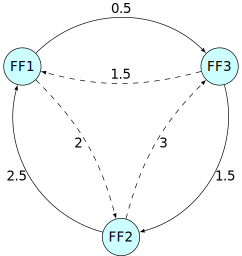
Identify the timing-critical cycle
-
Identify the circuit's most timing-critical cycle
-
Solve the minimum mean-weight cycle problem by
- Karp's algorithm
- A. Dasdan and R.K.Gupta, "Faster Maximum and Minimum Mean Cycle Algorithms for System-Performance", TCAD'98.
Distribute the slack
Distribute the slack evenly along the most timing-critical cycle.
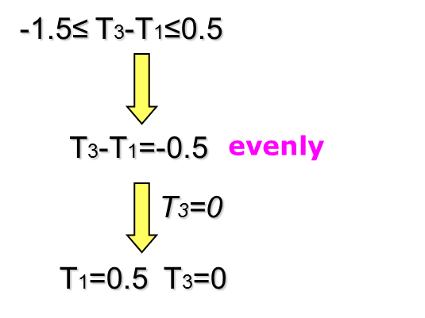
Freeze the clock skews (I)
Replace the critical cycle with super vertex.
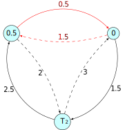 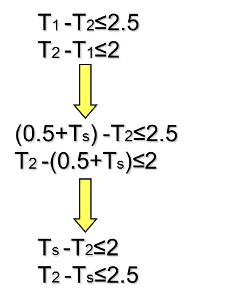
Freeze the clock skews (II)
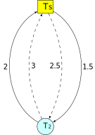
To determine the optimal slacks and skews for the rest of the graph, we replace the critical cycle with super vertex.
Repeat the process (I)
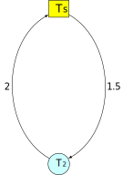 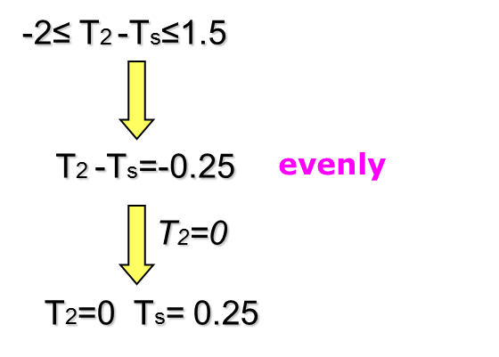
Repeat the process (II)
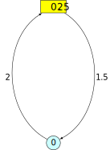
Final result
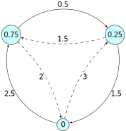
-
= 0.75
-
= -0.25
-
= -0.5
-
= 1.75
-
= 1.75
-
= 1
where
Problems with Even
- Assume all variances are the same.
- However, the timing uncertainty of a long combinational path is usually larger than that of a shorter path.
- Therefore, the even slack distribution along timing-critical cycles performed by Even is not optimal for yield if data path delays along the cycles are different.
Prop-Based on Gaussian model (I)
- Assuming there are gates with delay in a path, then this path delay is
- Distribute slack along the most timing-critical cycle, according to the square root of each edge's path delays (???).
- To achieve this, update the weights of s-edges and h-edges: where ensures a minimum timing margin for each timing constraint.
Prop-Based on Gaussian model (II)
- Given a specific clock period , we gradually increase and use the Bellman-Ford algorithm to detect whether it is still feasible.
- After finding the maximum , the edges along the most timing-critical cycle will have slacks equal to the pre-allocated timing margins.
- Many edges in a circuit have sufficiently large slack. Therefore, we can perform proportional slack distribution only for the most timing-critical cycle. Assign the rest of skews using Even.
Problems with Prop
- Assume all gate delay has the same distribution.
- Not justify using the square root of path delay for timing margin.
FP-Prop (I)
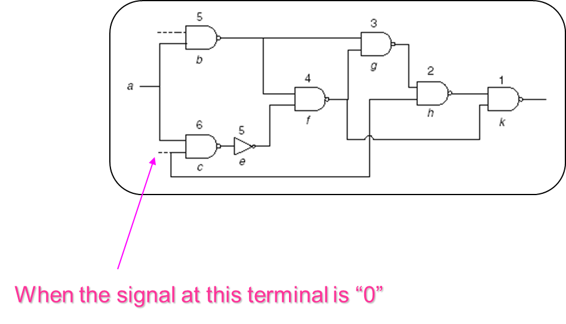 False path
FP-Prop (II)
- If we do not consider false path, some non timing-critical cycles become timing-critical. Then, more slacks are distributed to these cycles, but the slacks in actually timing-critical cycles are not sufficient. As a result, the overall timing yield decreases.
Problems with FP-Prop
- Same problems as Prop
🧪 Experimental Results
Statistical Method
-
Setup time constraint
-
Hold time constraint
where are random variable under process variations.
Statistical TC Graph
After SSTA, edge weight is represented as a pair of value (mean, variance).
Most Critical Cycle
-
Traditional criteria: minimum mean cycle
-
New criteria:
(We show the correctness later)
Slack Maximization (C-PROP)
- Slack Maximization Scheduling
- Equivalent to the minimum cost-to-time ratio problem (MMC), where:
- : critical cycle (first negative cycle)
Probability Observation
- Prob(timing failure) turns out to be an Error function that solely depends on this ratio. Therefore, it is justified to use this ratio as critical criteria.
Whole flow
-
After determining the clock arrival time at each vertex in the most critical cycle, the cycle is replaced with a super vertex .
-
In-edge from outside vertex to cycle member is replaced by an in-edge with weight mean .
-
Out-edge is replaced by out-edge with weight mean . However, the variance of the edge weight is not changed. And parallel edges can be remained.
-
Repeat the process iteratively until the graph is reduced to a single super vertex, or the edges number is zero.
Data structure
Final result:
Advantages of This Method
- Justified by probability observation.
- Fast algorithm exists for minimum cost-to-time ratio problem.
- Reduce to Even when all variances are equal.
- When a variance tends to zero, it makes sense that only minimal slack is assigned to this variable, and hence others can be assigned more.
Results
📑 Main Reference
- Jeng-Liang Tsai, Dong Hyum Baik, Charlie Chung-Ping Chen, and Kewal K. Saluja, "Yield-Driven, False-Path-Aware Clock Skew Scheduling", IEEE Design & Test of Computers, May-June 2005
Lecture 05b - ⏳ Clock Skew Scheduling Under Process Variations (2)
🗺️ Overview
-
A Review of CSS Issues
-
General Formulation
-
Yield-driven Clock Skew Scheduling
-
Numerical Results
Minimum Clock Period Problem
-
Linear programming (LP) formulation where and are sequentially adjacent to each other.
-
The above constraints are called system of difference constraints (see Introduction to Algorithms, MIT):
- Key: it is easy to check if a feasible solution exists by detecting negative cycles using the Bellman-Ford algorithm.
System of Difference Constraints
- In some cases, you may need to do some transformations, e.g.
Slack Maximization (EVEN)
-
Slack Maximization Scheduling (👉 Note: )
-
is equivalent to the so-called minimum mean cycle problem (MMC), where:
- ,
- : critical cycle (first negative cycle)
-
Can be efficiently solved by the parametric shortest path methods.
Slack Maximization (C-PROP)
-
Slack Maximization Scheduling (we show the correctness later)
-
is equivalent to the minimum cost-to-time ratio problem (MCR), where:
- ,
- : critical cycle
General Formulation
- General form: where a linear function that represents various problems defined above.
| Problem | (setup) | (hold) | |
|---|---|---|---|
| Min. CP | |||
| EVEN | |||
| C-PROP |
General Formulation (cont'd)
-
In fact, and are not necessarily linear functions. Any monotonic decreasing function will do.
-
Theorem: if and are monotonic decreasing functions for all and , then there is a unique solution to the problem. (prove later).
-
Question 1: Does this generalization have any application?
-
Question 2: What if and are convex but not monotone?
Non-Gaussian Distribution
-
65nm and below, the path delay is likely to have a non-Gaussian distribution:
👉 Note: central limit theorem does not apply because
- random variables are correlated (why?)
- delays are non-negative
Timing Yield Maximization
-
Formulation:
- is not exactly timing yield but reasonable.
-
It is equivalent to: where
-
Luckily, any CDF must be a monotonic increasing function.
Statistical Interpretations of C-PROP
-
Reduce to C-PROP when is Gaussian, or precisely
-
EVEN: identical distribution up to shifting
Not necessarily worse than C-PROP
Comparison
Three Solving Methods in General
- Binary search based
- Local convergence is slow.
- Cycle based
- Idea: if a solution is infeasible, there exists a negative cycle which can always be "zero-out" with minimum effort (proof of optimality)
- Path based
- Idea: if a solution is feasible, there exists a (shortest) path from where we can always improve the solution.
Parametric Shortest Path Algorithms
-
Lawler's algorithm (binary search)
-
Howard's algorithm (based on cycle cancellation)
-
Hybrid method
-
Improved Howard's algorithm
-
Input:
- Interval [tmin, tmax] that includes t*
- Tol: tolerance
- G(V, E): timing graph
-
Output:
- Optimal t* and its corresponding critical cycle C
Lawler's Algorithm
@startuml
while ((tmax - tmin) > tol)
: t := (tmin + tmax) / 2;
if (a neg. cycle C under t exists) then
: tmax := t;
else
: tmin := t;
endif
endwhile
: t* := t;
@enduml
Howard's Algorithm
@startuml
: t := tmax;
while (a neg. cycle C under t exists)
: find t' such that
sum{(i,j) in C | fij(t')} = 0;
: t := t';
endwhile
: t* := t;
@enduml
Hybrid Method
@startuml
while ((tmax - tmin) > tol)
: t := (tmin + tmax) / 2;
if (a neg. cycle C under t exists) then
: find t' such that
sum{(i,j) in C | fij(t')} = 0;
: t := t';
: tmax := t;
else
: tmin := t;
endif
endwhile
: t* := t;
@enduml
Improved Howard's Algorithm
@startuml
: t := (tmin + tmax) / 2;
while (no neg. cycle under t)
: tmin := t;
: t := (tmin + tmax) / 2;
endwhile
while (a neg. cycle C under t exists)
: find t' such that
sum{(i,j) in C | fij(t')} = 0;
: t := t';
endwhile
: t* := t;
@enduml
]
⏳ Clock Skew Scheduling for Unimodal Distributed Delay Models
@luk036
2022-10-26
Useful Skew Design: Why and Why not?
Bad 👎:
- Needs more engineer training.
- Balanced clock-trees are harder to build.
- Don't know how to handle process variation, multi-corner multi-mode, ..., etc.
Good 👍:
If you do it right,
- spend less time struggling about timing, or
- get better chip performance or yield.
What can modern STA tools do today?
- Manually assign clock arrival times to registers (all zeros by default)
- Grouping: Non-critical parts can be grouped as a single unit. In other words, there is no need for full-chip optimization.
- Takes care of multi-cycle paths, slew rate, clock-gating, false paths etc. All we need are the reported slacks.
- Provide 3-sigma statistics for slacks/path delays (POCV).
- However, the full probability density function and correlation information are not available.
Unimodality
-
In statistics, a unimodal probability distribution or unimodal distribution is a probability distribution with a single peak.
-
In continuous distributions, unimodality can be defined through the behavior of the cumulative distribution function (cdf). If the cdf is convex for and concave for , then the distribution is unimodal, being the mode.
-
Examples
- Normal distribution
- Log-normal distribution
- Log-logistic distribution
- Weibull distribution
Quantile function
-
The quantile function of a distribution is the inverse of the cumulative distribution function .
-
Close-form expression for some unimodal distributions:
- Normal:
- Log-normal:
- Log-logistic:
- Weibull:
-
For log-normal distribution:
- mode:
- CDF at mode:
Normal vs. Log-normal Delay Model
Normal/Gaussian:
- Convertible to a linear network optimization problem.
- Supported over the whole real line. Negative delays are possible.
- Symmetric, obviously not adaptable to the 3-sigma results.
Log-normal:
- Non-linear, but still can be solved efficiently with network optimization.
- Supported only on the positive side.
- Non-symmetric, may be able to fit into the 3-sigma results. (???)
Setup- and Hold-time Constraints
- Let , where
- : clock signal delay at the initial register
- : clock signal delay at the final register
- Assume in zero-skew, i.e. , the reported setup- and hold-time slacks are _ and _ respectively.
- Then, in useful skew design:
- In principle, represent the minimum- and maximum-path delay, and should be always greater than zero.
- Let
Yield-driven Optimization
-
Max-Min Formulation:
- ,
- No need for correlation information between paths.
- Not exactly the timing yield objective but reasonable.
-
Equivalent to:
- or:
Yield-driven Optimization (cont'd)
- In general, Lawler's algorithm (binary search) can be used.
- Depending on the distribution, there are several other ways to solve problem.
Gaussian Delay Model
- Reduce to:
- Linearization. Since is anti-symmetric and monotonic, we have:
-
is equivalent to the minimum cost-to-time ratio (linear).
-
However, actual path delay distributions are non-Gaussian.
Log-normal Delay Model
- Reduce to:
- Since is anti-symmetric and monotonic, we have:
- Bypass evaluating error function. Non-linear and non-convex, but still can be solved efficiently by for example binary search on .
Weibull Delay Model
- Reduce to:
Lecture 6
Network Optimization: Quick Start
@luk036
2022-11-09
📖 Introduction
Why and why not
-
👍 Algorithms are available for common network problems (Python: networkx, C++: Boost Graph Library (BGL)):
- Explore the locality of network.
- Explore associativity (things can be added up in any order)
-
👍 Be able to solve discrete problems optimally (e.g. matching/assignment problems)
-
👍 Bonus: gives you insight into the most critical parts of the network (critical cut/cycle)
-
👎 The theory is hard to understand.
-
👎 Algorithms are hard to understand (some algorithms do not allow users to have an input flow in reverse directions, but create edges internally for the reverse flows).
-
👎 There are too many algorithms available. You have to choose them wisely.
Flow and Potential
- Cut
- Current
- Flow
- Sum of around a node = 0

- Cycle/Path
- Voltage
- Tension
- Sum of around a cycle = 0

If you don't know more...
-
For the min-cost linear flow problem, the best guess is to use the "network simplex algorithm".
-
For the min-cost linear potential problem: formulate it as a dual (flow) problem.
-
For the parametric potential problem (single parameter), the best guess is to use Howard's algorithm.
-
All these algorithms are based on the idea of finding "negative cycle".
-
You can apply the same principle to the nonlinear problems.
For dual problems...
-
Dual problems can be solved by applying the same principle.
-
Finding negative cycles is replaced by finding a negative "cuts", which is more difficult...
-
...unless your network is a planar graph.
Guidelines for the average users
-
Look for specialized algorithms for specialized problems. For example, for bipartite maximum cardinality matching, use the Hopcroft-Karp matching algorithm.
-
Avoid creating edges with infinite costs. Delete them or reformulate your problem.
Guidelines for algorithm developers
-
Make "negative cycles" as orthogonal to each other as possible.
-
Reuse previous solutions as a new starting point for finding negative cycles.
💡 Essential Concepts
Basic elements of a network
Definition (network)
A network is a collection of finite-dimensional vector spaces, which includes nodes and edges/arcs:
- , where
- where
which satisfies 2 requirements:
- The boundary of each edge is comprised of the union of nodes
- The intersection of any edges is either empty or the boundary node of both edges.
Network
-
By this definition, a network can contain self-loops and multi-edges.
-
A graph structure encodes the neighborhood information of nodes and edges.
-
Note that Python's NetworkX requires special handling of multi-edges.
-
The most efficient graph representation is an adjacency list.
-
The concept of a graph can be generalized to complex: node, edge, face...
Types of graphs
Bipartite graphs, trees, planar graphs, st-graphs, complete graphs.
Orientation
Definition (Orientation)
An orientation of an edge is an ordering of its boundary node , where
- is called a source/initial node
- is called a target/terminal node
👉 Note: orientation != direction
Definition (Coherent)
Two orientations to be the same is called coherent
Node-edge Incidence Matrix (connect to algebra!)
Definition (Incidence Matrix)
An matrix is a node-edge incidence matrix with entries:
Example
Chain
Definition (Chain )
An edge/node chain is an /-tuple of scalar that assigns a coefficient to each edge/node, where / is the number of distinct edges/nodes in the network.
Remark (II)
A chain may be viewed as an (oriented) indicator vector representing a set of edges/nodes.
Example (II)
,
Discrete Boundary Operator
Definition (Boundary operator)
The boundary operator .
Definition (Cycle)
A chain is said to be a cycle if it is in the null-space of the boundary operator, i.e. .
Definition (Boundary)
A chain is said to be a boundary of if it is in the range of the boundary operator.
Co-boundary Operator
Definition (Co-boundary operator)
The co-boundary (or differential) operator
👉 Note
Null-space of is #components of a graph
Discrete Stokes' Theorem
- Let
- Conventional (integration):
- Discrete (pairing):
Fundamental Theorem of Calculus
-
Conventional (integration):
-
Discrete (pairing):

Divergence and Flow
Definition (Divergence)
Definition (Flow)
is called a flow if , where all negative entries of (div ) are called sources and positive entries are called sinks.
Definition (Circulation)
A network is called a circulation if there is no source or sink. In other words,
Tension and Potential
Definition (Tension)
A tension (in co-domain) is a differential of a potential , i.e. .
Theorem (Tellgen's)
Flow and tension are bi-orthogonal (isomorphic).
Proof
Path
A path indicator vector of that
Theorem
[total tension on ] = [total potential on the boundary of ].
Proof
.
Cut
Two node sets and (the complement of , i.e. ). A cut is an edge set, denoted by . A cut indicator vector (oriented) of is defined as where
Theorem (Stokes' theorem!)
[Total divergence of on ] = [total across ].
Proof
.
Examples

Feasibility Problems
Feasible Flow/Potential Problem
Feasible Flow Problem
-
Find a flow such that:
-
Can be solved using:
-
Painted network algorithm
-
If no feasible solution, return a "negative cut".
-
Feasible Potential Problem:
-
Find a potential such that:
-
Can be solved using:
-
Bellman-Ford algorithm
-
If no feasible solution, return a "negative cycle".
-
Examples
Genome-scale reaction network (primal)
-
: Stoichiometric matrix
-
: reactions between metabolites/proteins
-
: constraints on reaction rates
Timing constraints (co-domain)
-
: incidence matrix of timing constraint graph
-
: arrival time of clock
-
: clock skew
-
: setup- and hold-time constraints
Feasibility Flow Problem
Theorem (feasibility flow)
The problem has a feasible solution if and only if for all cuts where = upper capacity [1, p. 56].
Proof (if-part)
Let be a cut vector (oriented) of . Then
Feasibility Potential Problem
Theorem (feasibility potential)
The problem has a feasible solution if and only if for all cycles where = upper span [1, p. ??].
Proof (if-part)
Let be a path indicator vector (oriented) of . Then
Remarks
-
The only-if part of the proof is constructive. It can be done by constructing an algorithm to obtain the feasible solution.
-
could be or zero, etc.
-
could be or zero, etc.
-
could be or zero, etc.
-
could be or zero, etc.
Note: most tools require that must be zero such that the solution flow is always positive.
Convert to the elementary problem
- By splitting every edge into two, the feasibility flow problem can reduce to an elementary one:
-
Find a flow such that
where is the incident matrix of the modified network.
-
Original:

Modified:

Convert to the elementary problem
-
By adding a reverse edge for every edge, the feasibility potential problem can reduce to an elementary one:
-
Find a potential such that
where is the incident matrix of the modified network.
-
Original:

Modified:

]
Basic Bellman-Ford Algorithm
function BellmanFord(list vertices, list edges, vertex source)
// Step 1: initialize graph
for each vertex i in vertices:
if i is source then u[i] := 0
else u[i] := inf
predecessor[i] := null
// Step 2: relax edges repeatedly
for i from 1 to size(vertices)-1:
for each edge (i, j) with weight d in edges:
if u[j] > u[i] + d[i,j]:
u[j] := u[i] + d[i,j]
predecessor[j] := i
// Step 3: check for negative-weight cycles
for each edge (i, j) with weight d in edges:
if u[j] > u[i] + d[i,j]:
error "Graph contains a negative-weight cycle"
return u[], predecessor[]
Example 1 : Clock skew scheduling ⏳
- Goal: intentionally assign an arrival time to each register so that the setup and hold time constraints are satisfied.
- Note: the clock skew is more important than the arrival time itself, because the clock runs periodically.
- In the early stages, fixing the timing violation could be done as soon as a negative cycle is detected. A complete timing analysis is unnecessary at this stage.
Example 2 : Delay padding + clock skew scheduling ⏳
-
Goal: intentionally "insert" a delay so that the setup and hold time constraints are satisfied.
-
Note that a delay can be "inserted" by swapping a fast transistor into a slower transistor.
-
Traditional problem formulation: Find and such that
-
Note 1: Inserting delays into some local paths may not be allowed.
-
Note 2: The problem can be reduced to the standard form by modifying the network (timing constraint graph)
Four possible ways to insert delay
- No delay:

- :

- Independent:

- :

Remarks (III)
-
If there exists a negative cycle, it means that timing cannot be fixed using simply this technique.
-
Additional constraints, such as , can be imposed.
Parametric Problems
Parametric Potential Problem (PPP)
-
Consider a parameter potential problem: where is a monotonic decreasing function.
-
If is a linear function where is non-negative, the problem reduces to the well-known minimum cost-to-time ratio problem.
-
If = constant, it further reduces to the minimum mean cycle problem.
Note: Parametric flow problem can be defined similarly.
Examples (III)
-
is linear :
-
Optimal clock period scheduling problem
-
Slack maximization problem
-
Yield-driven clock skew scheduling ⏳ (Gaussian)
-
-
is non-linear:
-
Yield-driven clock skew scheduling ⏳ (non-Gaussian)
-
Multi-domain clock skew scheduling ⏳
-
Examples (IV)
-
Lawler's algorithm (binary search based)
-
Howard's algorithm (cycle cancellation)
-
Young's algorithm (path based)
-
Burns' algorithm (path based)
- for clock period optimization problem (all elements of are either 0 or 1)
-
Several hybrid methods have also been proposed
Remarks (IV)
-
Need to solve feasibility problems many times.
-
Data structures, such as Fibonacci heap or spanning tree/forest, can be used to improve efficiency
-
For multi-parameter problems, the ellipsoid method can be used.
-
Example 1: yield-driven clock skew scheduling ⏳ (c.f. lecture 5)
Example 2: yield-driven delay padding
- The problem can be reduced to the standard form by modifying the underlying constraint graph.
Four possible way to insert delay
- No delay:

- :

- Independent:

- :

Min-cost Flow/Potenial Problem
Elementary Optimal Problems
-
Elementary Flow Problem:
-
Elementary Potential Problem:
Elementary Optimal Problems (Cont'd)
-
The problems are dual to each other if
-
Since =
-
when equality holds.
Remark (V)
-
We can formulate a linear problem in primal or dual form, depending on which solution method is more appropriate:
-
Incremental improvement of feasible solutions
-
Design variables are in the integral domain:
- The max-flow problem (i.e. ) may be better solved by the dual method.
-
Linear Optimal Problems
-
Optimal Flow Problem:
-
Optimal Potential Problem:
Linear Optimal Problems (II)
By modifying the network:
- The problem can be reduced to the elementary case [pp.275-276]
piece of cake
- Piece-wise linear convex cost can be reduced to this linear problem [p.239,p.260]
The problem has been extensively studied and has numerous applications.
Remark (VI)
-
We can transform the cost function to be non-negative by reversing the orientation of the negative cost edges.
-
Then reduce the problem to the elementary case (or should we???)
Algorithms for Optimal Flow Problems
-
Successive shortest path algorithm
-
Cycle cancellation method
- Iteratively insert additional minimal flows according to a negative cycle of the residual network until no negative cycles are found.
-
Scaling method
For Special Cases
-
Max-flow problem ()
-
Ford-Fulkerson algorithm: iteratively insert additional minimal flows according to an augmented path of the residual network, until no augmented paths of the residual network are found.
-
Pre-flow Push-Relabel algorithm (dual method???)
-
-
Matching problems ()
- Edmond's blossom algorithm
Min-Cost Flow Problem (MCFP)
-
Problem Formulation:
-
Algorithm idea: descent method: given a feasible , find a better solution , where is positive.
General Descent Method
- Input: , initial
- Output: optimal opt
- while not converged,
- Choose descent direction ;
- Choose the step size ;
- ;
Some Common Descent Directions
- Gradient descent:
- Steepest descent:
- = argmin
- = (un-normalized)
- Newton's method:
- For convex problems, must satisfy .
Note: Here, there is a natural way to choose !
Min-Cost Flow Problem (II)
-
Let , then we have:
-
In other words, choose to be a negative cycle!
-
Simple negative cycle, or
-
Minimum mean cycle
-
Primal Method for MCFP
- Input:
- Output: optimal opt
- Initialize a feasible and certain data structure
- while a negative cycle found in ,
- Choose a step size ;
- If is unbounded, return UNBOUNDED;
- If , break;
- ;
- Update corresponding data structures
- return OPTIMAL
Remarks (VI)
-
In Step 4, negative cycle can be found using Bellman-Ford algorithm.
-
In the cycle cancelling algorithm, is:
-
a simple negative cycle, or
-
a minimum mean cycle
-
-
A heap or other data structures are used for finding negative cycles efficiently.
-
Usually is chosen such that one constraint is tight.
Min-Cost Potential Problem (MCPP)
-
Problem Formulation: where is assumed to be non-negative.
-
Algorithm: given an initial feasible , find a better solution , where is positive:
Method for MCPP
- Input:
- Output: optimal opt
- Initialize a feasible and certain data structure
- while a negative cut found in ,
- Choose a step size ;
- If is unbounded, return UNBOUNDED;
- If , break;
- ;
- Update corresponding data structures
- return OPTIMAL
Remarks (VII)
-
Usually is chosen such that one constraint is tight.
-
The min-cost potential problem is the dual of the min-cost flow problem, so algorithms can solve both problems.
-
In the network simplex method, is chosen from a spanning tree data structure (for linear problems only)
When "Convex Optimization" Meets "Network Flow"
@luk036
2022-11-16
📖 Introduction
Overview
-
Network flow problems can be solved efficiently and have a wide range of applications.
-
Unfortunately, some problems may have other additional constraints that make them impossible to solve with current network flow techniques.
-
In addition, in some problems, the objective function is quasi-convex rather than convex.
-
In this lecture, we will investigate some problems that can still be solved by network flow techniques with the help of convex optimization.
Parametric Potential Problems
Parametric potential problems
Consider:
where and are concave.
Note: the parametric flow problems can be defined in a similar way.
Network flow says:
-
For fixed , the problem is feasible precisely when there exists no negative cycle
-
Negative cycle detection can be done efficiently using the Bellman-Ford-like methods
-
If a negative cycle is found, then
Convex Optimization says:
-
If both sub-gradients of and are known, then the bisection method can be used for solving the problem efficiently.
-
Also, for multi-parameter problems, the ellipsoid method can be used.
Quasi-convex Minimization
Consider:
where is quasi-convex and are concave.
Example of Quasi-Convex Functions
-
is quasi-convex on
-
is quasi-linear on
-
is quasi-concave on
-
Linear-fractional function:
-
=
-
dom =
-
-
Distance ratio function:
-
=
-
dom =
-
Convex Optimization says:
If is quasi-convex, there exists a family of functions such that:
-
is convex w.r.t. for fixed
-
is non-increasing w.r.t. for fixed
-
-sublevel set of is -sublevel set of , i.e., iff
For example:
-
with convex, concave , on dom ,
-
can take =
Convex Optimization says:
Consider a convex feasibility problem:
-
If feasible, we conclude that ;
-
If infeasible, .
Binary search on can be used for obtaining .
Quasi-convex Network Problem
-
Again, the feasibility problem ([eq:quasi]) can be solved efficiently by the bisection method or the ellipsoid method, together with the negatie cycle detection technique.
-
Any EDA's applications ???
Monotonic Minimization
-
Consider the following problem:
where is non-decreasing.
-
The problem can be recast as:
where is non-deceasing w.r.t. .
E.g. Yield-driven Optimization
-
Consider the following problem:
where is a random variables.
-
Equivalent to the problem:
where is non-deceasing w.r.t. .
E.g. Yield-driven Optimization (II)
-
Let is the cdf of .
-
Then:
-
The problem becomes:
Network flow says
- Monotonic problem can be solved efficiently using cycle-cancelling methods such as Howard's algorithm.
Min-cost flow problems
Min-Cost Flow Problem (linear)
Consider:
- some could be some could be .
- is the incidence matrix of a network .
Conventional Algorithms
- Augmented-path based:
- Start with an infeasible solution
- Inject minimal flow into the augmented path while maintaining infeasibility in each iteration
- Stop when there is no flow to inject into the path.
- Cycle cancelling based:
- Start with a feasible solution
- find a better sol'n , where is positive and is a negative cycle indicator.
General Descent Method
- Input: a starting dom
- Output:
- repeat
- Determine a descent direction .
- Line search. Choose a step size .
- Update.
- until a stopping criterion is satisfied.
Some Common Descent Directions
- For convex problems, the search direction must satisfy .
- Gradient descent:
- Steepest descent:
- = argmin.
- = (un-normalized)
- Newton's method:
Network flow says (II)
- Here, there is a better way to choose !
- Let , then we have:
- In other words, choose to be a negative cycle with cost !
- Simple negative cycle, or
- Minimum mean cycle
Network flow says (III)
- Step size is limited by the capacity constraints:
- , for
- , for
- = min
- If , the problem is unbounded.
Network flow says (IV)
- An initial feasible solution can be obtained by a similar construction of the residual graph and cost vector.
- The LEMON package implements this cycle cancelling algorithm.
Min-Cost Flow Convex Problem
- Problem Formulation:
Common Types of Line Search
- Exact line search: = argmin
- Backtracking line search (with parameters )
- starting from , repeat until
- graphical interpretation: backtrack until
Network flow says (V)
- The step size is further limited by the following:
- In each iteration, choose as a negative cycle of , with cost such that
Quasi-convex Minimization (new)
-
Problem Formulation:
-
The problem can be recast as:
Convex Optimization says (II)
- Consider a convex feasibility problem:
- If feasible, we conclude that ;
- If infeasible, .
- Binary search on can be used for obtaining .
Network flow says (VI)
- Choose as a negative cycle of with cost
- If no negative cycle is found, and , we conclude that the problem is infeasible.
- Iterate until becomes feasible, i.e. .
E.g. Linear-Fractional Cost
-
Problem Formulation:
-
The problem can be recast as:
Convex Optimization says (III)
- Consider a convex feasibility problem:
- If feasible, we conclude that ;
- If infeasible, .
- Binary search on can be used for obtaining .
Network flow says (VII)
- Choose to be a negative cycle of with cost , i.e.
- If no negative cycle is found, and , we conclude that the problem is infeasible.
- Iterate until .
E.g. Statistical Optimization
-
Consider the quasi-convex problem:
- is random vector with mean and covariance .
- Hence, is a random variable with mean and variance .
Statistical Optimization
- The problem can be recast as:
👉 Note: (convex quadratic constraint w.r.t )
Recall...
Recall that the gradient of is .
Problem w/ additional Constraints (new)
- Problem Formulation:
E.g. Yield-driven Delay Padding
-
Consider the following problem:
- : delay padding
- : weight (determined by a trade-off curve of yield and buffer cost)
- : Gaussian random variable with mean and variance .
E.g. Yield-driven Delay Padding (II)
.pull-left[
- The problem is equivalent to:
]
.pull-right[
- or its dual:
]
Recall ...
-
Yield drive CSS:
-
Delay padding
Considering Barrier Method
-
Approximation via logarithmic barrier:
- where
- Approximation improves as
- Here,
Barrier Method
- Input: a feasible , , , tolerance
- Output:
- repeat
- Centering step. Compute by minimizing
- Update .
- Increase .
- until .
👉 Note: Centering is usually done by Newton's method in general.
Network flow says (VIII)
In the centering step, instead of using the Newton descent direction, we can replace it with a negative cycle on the residual graph.
Useful Skew Design Flow
Useful Skew Design: Why vs. Why Not
Why not
Some common challenges when implementing useful skew design include:
- need more engineer training
- difficulty in building a balanced clock-tree
- uncertainty in how to handle process variation and multi-corner multi-mode issues ..., etc.
Why
If these challenges are overcome and useful skew design is implemented correctly,
- it can lead to less time spent on timing issues
- get better chip performance or yield
Clock Arrival Time vs. Clock Skew
-
Clock signal runs periodically.
-
Thus, absolute clock arrival time is not so important.
-
Instead, the skew is more important in this scenario.
Useful Skew Design vs. Zero-Skew Design
- "Critical cycle" instead of "critical path".
- "Negative cycle" instead of "negative slack".
- If there is a negative cycle, it means that there is no positive slack solution no matter how to schedule.
- Others are pretty much the same.
- Same design principle:
- Always tackle the most critical one first!
Linear Programming vs. Network Flow Formulation
- Linear programming formulation
- can handle more complex constraints
- Network flow formulation
- usually more efficient
- return the most critical cycle as a bonus
- can handle quantized buffer delay (???)
- Anyway, timing analysis is much more time-consuming than the optimization solving.
Target Skew vs. Actual Skew
Don't mess up these two concepts:
- Target skew:
- the skew we want to achieve in the scheduling stage.
- Usually deterministic (we schedule a meeting at 10:00, rather than 10:00 34 minutes, right?)
- Actual skew
- the skew that the clock tree actually generates.
- Can be formulated as a random variable.
A Simple Case
To warm up, let us start with a simple case:
- Assume equal path delay variations.
- Single-corner.
- Before a clock tree is built.
- No adjustable delay buffer (ADB).
Network
Definition (Network)
A network is a collection of finite-dimensional vector spaces of nodes and edges/arcs:
- , where
- where
which satisfies 2 requirements:
- The boundary of each edge is comprised of the union of nodes
- The intersection of any edges is either empty or a boundary node of both edges.
Example
\begin{figure}[hp] \centering \input{lec07.files/network.tikz} \caption{A network}% \label{fig:network} \end{figure}
Orientation
Definition (Orientation)
An orientation of an edge is an ordering of its boundary node , where
- is called a source/initial node
- is called a target/terminal node
Definition (Coherent)
Two orientations to be the same is called coherent
Node-edge Incidence Matrix
Definition (Incidence Matrix)
A matrix is a node-edge incidence matrix with entries:
Example (II)
Timing Constraint
- Setup time constraint While this constraint destroyed, cycle time violation (zero clocking) occurs.
- Hold time constraint While this constraint destroyed, race condition (double clocking) occurs.
Timing Constraint Graph
- Create a graph (network) by
- replacing the hold time constraint with an h-edge with cost from to , and
- replacing the setup time constraint with an s-edge with cost from to .
- Two sets of constraints stemming from clock skew definition:
- The sum of skews for paths having the same starting and ending flip-flop to be the same;
- The sum of clock skews of all cycles to be zero
Timing Constraint Graph (TCG)
\begin{figure}[h!] \centering \input{lec05.files/tcgraph.tikz} \end{figure}
First Thing First
Meet all timing constraints
- Find in
- How to solve:
- Find a negative cycle, fix it.
- Iterate until no negative cycle is found.
- Bellman-Ford-like algorithm (and its variants are publicly
available):
- Strongly suggest "Lazy Evaluation":
- Don't do full timing analysis on the whole timing graph at the beginning!
- Instead, perform timing analysis only when the algorithm needs.
- Stop immediately whenever a negative cycle is detected.
- Strongly suggest "Lazy Evaluation":
Delay Padding (DP)
- Delay padding is a technique that fixes the timing issue by intentionally solely "increasing" delays.
- Usually formulated as:
- Find in
- If the objective is to minimize the sum of , then the problem is the dual of the standard min-cost flow problem, which can be solved efficiently by the network simplex algorithm (publicly available).
- Beautiful right?
Delay Padding (II)
- No, the above formulation is impractical.
- In modern design, "inserting" a delay may mean swapping a faster cell with a slower cell from the cell library. Thus, no need to minimize the sum of .
- More importantly, it may not be possible to find a position to insert delay for some delay paths.
- Some papers consider only allowing insert delays to the max-delay path only. Some papers consider only allowing insert delays to both the max- and min-delay paths together only. None of them are perfect.
Delay Padding (III)
- My suggestion. Instead of calculating the necessary and then look for the suitable position to insert, it is easier (and more flexible) to determine the position first and then calculate the suitable values.
- It can be achieved by modifying the timing graph and solve a feasibility problem. Easy enough!
- Quantized delay can be handled too (???).
Four possible ways to insert delay
\begin{figure}[htpb] \centering \subfigure[No delay can be inserted]{ \input{lec07.files/no_delay.tikz} } \subfigure[, independently]{ \input{lec07.files/independent.tikz} } \subfigure[]{ \input{lec07.files/same_delay.tikz} } \subfigure[]{ \input{lec07.files/setup_greater.tikz} } \caption{} \end{figure}
Delay Padding (cont'd)
- If there exists a negative cycle in the modified timing graph, it
implies that the timing problem cannot be fixed by simply the delay
padding technique.
- Then, try decrease , or increase
- Be aware of the min-delay path is still the min-delay path after a certain amount of delay is inserted (how???).
Variation Issue
Yield-driven Clock Skew Scheduling
- Assume all timing issues are fixed.
- Now, how to schedule the arrival times to maximize yield?
- According to the critical-first principle, we seek for the most critical cycle first.
- The problem can be formulated as:
- .
- It is equivalent to the minimum mean cycle problem, which can be solved efficiently by for example Howard's algorithm (publicly available).
Minimum Balancing Algorithm
- Then we evenly distribute the slack on this cycle.
- To continue the next most critical cycle, we contract the first one into a "super vertex" and repeat the process.
- The process stops when the timing graph remains only a single vertex.
- The overall method is known as minimum balancing (MB) algorithm in the literature.
Example: Most timing-critical cycle
The most vulnerable timing constraint
\input{lec05.files/tcgraph2.tikz}
Example: Distribute the slack
- Distribute the slack evenly along the most timing-critical cycle.
\input{lec05.files/tcgraph3.tikz}
Example: Distribute the slack (cont'd)
- To determine the optimal slacks and skews for the rest of the graph, we replace the critical cycle with a super vertex.
\input{lec05.files/tcgraph4.tikz} \input{lec05.files/tcgraph5.tikz}
Repeat the process iteratively
\input{lec05.files/tcgraph6.tikz}
Repeat the process iteratively (II)
\input{lec05.files/tcgraph7.tikz}
Final result
-
Skew = 0.75
-
Skew = -0.25
-
Skew = -0.5
-
Slack = 1.75
-
Slack = 1.75
-
Slack = 1
where Slack = CP - D - T - Skew
\begin{tikzpicture} \def \radius {2cm}
\node[draw, circle, fill=cyan!20] at ({30}:\radius) (n1) {0.25}; \node[draw, circle, fill=cyan!20] at ({150}:\radius) (n2) {0.75}; \node[draw, circle, fill=cyan!20] at ({270}:\radius) (n3) {0};
\path[->, >=latex] (n2) edge [bend left=45] node[above]{0.5} (n1); \path[->, >=latex] (n3) edge [bend left=45] node[left]{2.5} (n2); \path[->, >=latex] (n1) edge [bend left=45] node[right]{1.5} (n3);
\path[dashed, ->, >=latex] (n1) edge [bend left=15] node[above]{1.5} (n2); \path[dashed, ->, >=latex] (n2) edge [bend left=15] node[left]{2} (n3); \path[dashed, ->, >=latex] (n3) edge [bend left=15] node[right]{3} (n1);
\end{tikzpicture}
What the MB algorithm really give us?
- The MB algorithm not only give us the scheduling solution, but also a tree-topology that represents the order of "criticality"!
\begin{figure} \centering \input{lec05.files/hierachy.tikz} \end{figure}
Clock-tree Synthesis and Placement
- I strongly suggest that the topology of the clock-tree precisely
follows the order of "criticality"!
- since the lower branch of clock-tree has smaller skew variation.
- I also suggest that the placer should follow the topology of the
clock-tree:
- Physically place the registers of the same branch together.
- The locality implies stronger correlation of variations and implies even smaller skew variation due to the cancellation effect.
- Note that the current SSTA does not provide the correlation information, so this is the best you can do!
Second Example: Yield-driven Clock Skew Scheduling
- Now assume that SSTA (or STA+OCV, POCV, AOCV) is performed.
- Let (, ) be the (mean, variance) of
- The most critical cycle can be obtained by solving:
- It is equivalent to the minimum cost-to-time ratio cycle problem, which can be solved efficiently by for example Howard's algorithm (publicly available).
- Gaussian distribution is assumed. For arbitrary distribution, see my DAC'08 paper.
What About the Correlation?
- In the above formulation, we minimum the maximum possibility of timing violation of each individual timing constraint. So only individual delay distribution is needed.
- Yes, the objective function is not the true timing-yield. But it is reasonable, easy to solve, and is the best you can do so far.
Multi-Corner Issue
Meet all timing constraints in Multi-Corner
- Assume no Adjustable Delay Buffer (ADB)
- Find in
- Equivalent to finding in
- Feasibility problem
- How to solve:
- Find a negative cycle, fix it.
- Iterate until no negative cycle is found.
- Better avoid fixing the timing issue corner-by-corner. Inducing ping-pong effect.
Delay padding (DP) in Multi-Corner
- The problem CANNOT be formulated as a network flow problem. But still you can solve it by a linear programming formulation.
- Or, decompose the problem into sub-problems for each corner.
- Again use the modified timing graph technique.
- Then, 's are shared variables of sub-problems.
- If we solve each sub-problem individually, the solution will not agree with each other. Induce ping-pong effect.
- Need something to drive the agreement.
Delay Padding (DP) in Multi-Corner (cont'd)
- Follow the idea of dual decomposition: If a solution is above the average. then introduce a punishment cost. If a solution is below the average, then introduce a rewarding cost.
- Then, each subproblem is a min-cost potential problem, which can be solved efficiently.
- If some subproblems do not have feasible solutions, it implies that the problem cannot be fixed by simply delay padding.
- The process repeats until all solutions converge. If not, it implies that the problem cannot be fixed by simply delay padding.
Yield-driven Clock Skew Scheduling
- More or less the same as in Single Corner.
Clock-Tree Issue
Clock Tree Synthesis (CTS)
- Construct merging location
- DME algorithm, Elmore delay, buffer insertion
- Some research on bounded-skew DME algorithm. But the algorithm is too complicated in my opinion.
- If the previous stage is over-optimized, the clock tree is hard to implement. If it happens, some budgeting techniques should be invoked (engineering issue)
- After a clock tree is constructed, more detailed timing (rather than Elmore delay) can be obtained via timing analysis.
Co-optimization Issue
- After a clock tree is built, we have a clearer picture.
- Should I perform the re-scheduling? And how?
- Some papers suggest adding a factor to the timing constraint, say: .
- Then the formulation is not a kind of network-flow, but may still be solvable by linear programming.
- Need to investigate more deeply.
Adjustable Delay Buffer Issue
Adjustable delay buffers in Multi-Mode
- Assume adjustable delay buffers are added solely to the clock tree
- Hence, each mode can have a different set of arrival times.
- Easier for clock skew scheduling, harder for clock-tree synthesis.
Meet timing constraint in Multi-Mode:
- find in
- Can be done in parallel.
- find a negative cycle, fix it (do not need to know all at the beginning) for every mode in parallel.
Delay Padding (DP) in Multi-mode
- Again use a modified timing graph technique.
- NOT a network flow problem. Use LP, or
- Dual decomposition -> min-cost potential problem for each mode
- Only 's are shared variables.
- Initial feasible solution obtained by the single-mode method
- A negative cycle => problem cannot be fixed by DP
- Not converge => problem cannot be fixed by DP
- Try decrease , or increase
Yield-driven Clock Skew Scheduling
- Pretty much the same as Single-Mode.
Difficulty in ADB Multi-Mode Design
- How to design the clock-tree?
- What is the order of criticality?
- How to determine the minimum range of ADB?
Lecture 8: Phase Shifting Mask
@luk036
2022-11-26
🗺️ Overview
- Background
- What is Phase Shifting Mask?
- Phase Conflict Graph
- Phase Assignment Problem
- Greedy Approach
- Planar Graph Approach
class: middle, center
Background
Background
.pull-left[
-
In the past, chips have continued to get smaller and smaller, and therefore consume less and less power.
-
However, we are rapidly approaching the end of the road and optical lithography cannot take us to the next place we need to go.
] .pull-right[

]
Process of Lithography
.pull-left[
-
Photo-resist coating (光阻涂层)
-
Illumination (光照)
-
Exposure (曝光)
-
Etching (蚀刻)
-
Impurities doping (杂质掺杂)
-
Metal connection
] .pull-right[

]
Sub-wavelength Lithography
.pull-left[
- Feature size is much smaller than the lithography wavelength
- 45nm vs. 193nm

] .pull-right[
- What you see in the mask/layout is not what you get on the chip:
- Features are distored
- Yields are declined

]

DFM Tool (Mentor Graphics)

OPC and PSM
.pull-left[
- Results of OPC on PSM:
- A = original layout
- B = uncorrected layout
- C = after PSM and OPC
] .pull-right[

]
Phase Shifting Mask

Phase Conflict Graph
- Edge between two features with separation of (dark field)
- Similar conflict graph for "bright field".
- Construction method: plane sweeping method + dynamic priority search tree

Phase Assignment Problem
.pull-left[
- Instance: Graph
- Solution: A color assignment (here )
- Goal: Minimize the weights of the monochromatic edges. (Question: How can we model the weights?)
] .pull-right[

]
Phase Assignment Problem
- In general, the problem is NP-hard.
- It is solvable in polynomial time for planar graphs with , since the problem is equivalent to the T-join problem in the dual graph [Hadlock75].
- For planar graphs with , the problem can be solved approximately in the ratio of two using the primal-dual method.
Overview of Greedy Algorithm
- Create a maximum weighted spanning tree (MST) of (can be found in LEDA package)
- Assign colors to the nodes of the MST.
- Reinsert edges that do not conflict.
- Time complexity:
- Can be applied to non-planar graphs.
Greedy Algorithm
.pull-left[
- Step 1: Construct a maximum spanning tree of (using e.g. Kruskal's algorithm, which is available in the LEDA package).
] .pull-right[

]
Greedy Algorithm (Cont'd)
.pull-left[
- Step 2: Assign colors to the nodes of .
] .pull-right[

]
Greedy Algorithm (Cont'd)
.pull-left[
- Step 3: Reinsert edges that do not conflict.
] .pull-right[

]

Other Approaches
-
Reformulate the problem as a MAX-CUT problem. Note that the MAX-CUT problem is approximatable within a factor of 1.1383 using the "semi-definite programming" relaxation technique [Goemans and Williamson 93].
-
Planar graph approach: Convert to a planar graph by removing the minimal edges, and then apply the methods to the resulting planar graph.
👉 Note: the optimal "planar sub-graph" problem is NP-hard.
Overview of Planar Graph Approach (Hadlock's algorithm)
- Approximate by a planar graph
- Decompose into its bi-connected components.
- For each bi-connected component in ,
- construct a planar embedding
- construct a dual graph
- construct a complete graph , where
- is a set of odd-degree vertices in
- the weight of each edge is the shortest path of two vertices
- find the minimum perfect matching 💯👬🏻 solution. The matching edges are the conflict edges that have to be deleted.
- Reinsert the non-conflicting edges from .
Planar Graph Approach
.pull-left[
- Step 1: Approximate with a planar graph
- It is NP-hard.
- The naive greedy algorithm takes time.
- Any good suggestion?
] .pull-right[

]
Planar Graph Approach
-
Step 2: Decompose into its bi-connected components in linear time (available in the LEDA package).

Planar Graph Approach
-
Step 3: For each bi-connected component in , construct a planar embedding in linear time (available in the LEDA package)

👉 Note: planar embedding may not be unique unless is tri-connected.
Planar Graph Approach
.pull-left[
- Step 4: For each bi-connected component, construct its dual graph in linear time.
] .pull-right[

]
Planar Graph Approach
.pull-left[
-
Step 5: Find the minimum weight perfect matching 💯👬🏻 of .
- Polynomial time solvable.
- Can be formulated as a network flow problem.
👉 Note: complete graph vs. Voronoi graph
] .pull-right[

]
Planar Graph Approach
.pull-left[
- Step 6: reinsert the non-conflicting edges in .
👉 Note: practically we keep track of conflicting edges.
] .pull-right[

]
Lecture 9: Double Patterning 👫
@luk036
2022-11-23
Background
-
In the past, chips have continued to get smaller and smaller, and therefore consume less and less power.
-
However, we are rapidly approaching the end of the road and optical lithography cannot take us to the next place we need to go.
Sub-wavelength Lithography
- Feature size << lithography wavelength
- 45 nm vs. 193 nm
- What you see in the mask/layout is not what you get on the chip:
- Features are distorted
- Yields are declined
What is Double Patterning?
Unlike conventional optical lithography, which exposes the photoresist once under one mask, masks is exposed twice by splitting them into two, each with half its feature density.
Key technologies
-
Layout fracturing algorithm to reduce the number of rectangles and the total cut length.
-
Dynamic priority search tree for plane sweeping.
-
Graph-theoretic approach:
- Convert the coloring problem to a T-join problem and then solve it with Hadlock's algorithm.
-
Decompose the underlying conflict graph into its tri-connected components using a data structure named SPQR-tree.
Polygon Fracturing Algorithm
- Allow minimal overlap to reduce the number of rectangles, and thus the number of conflicts.
Conflict Detection
-
Rule 1: If the distance between two rectangles is , then the two rectangles are not in conflict.
-
Rule 2: Two overlapping/contacting rectangles are NOT conflict.
-
Rule 3:
-
Definition: A polygon is said to be rectilinearly convex if it is both x-monotone and y-monotone.
-
Two rectangles and are in conflict if they are apart and there is a path from to that reconstructs a "concave" polygon.
-
Conflicting: , , but not , and .
-
Conflict Graph
- Blue edge: positive weight (opposite color preferred)
- Green edge: negative weight (same color preferred)
Formulation of the Layout Decomposition Problem
- INSTANCE: Graph and weight function
- SOLUTION: Disjoint subsets of vertices and so that and .
- MINIMIZE: total cost where or
👉 Note: the problem is
- Linear time solvable for bipartite graphs.
- Polynomial time solvable for planar graphs.
- But in general, NP-hard (even for tripartite graphs)
Graph-Theoretic Approach
-
Q: How can we produce a high-quality result when the problem is NP-hard?
-
A: Observe that is a nearly planar graph: we can use Hadlock's algorithm.
-
However, the time complexity of this method is still very high.
-
Solution: Graph division methods.
SPQR-Tree
Connected Graph
-
Recall that a graph is a connected if every pair of vertices in is connected by a path.
-
A graph can be divided into its connected components in linear time.
-
Clearly, the color assignment problem can be solved independently for each connected component without affecting any QoR.
Bi-connected Graph
-
A vertex is called a cut-vertex of a connected graph if removing it disconnects .
-
If no cut-vertex is found in , then the graph is called a bi-connected graph.
-
In the following example, , and are cut-vertices.
![An example of a conflict graph with its bi-connected components. Vertices <data class="katex-src" value="a"><span class="katex"><span class="katex-html" aria-hidden="true"><span class="base"><span class="strut" style="height:0.4306em;"></span><span class="mord mathnormal">a</span></span></span></span></data>, <data class="katex-src" value="b"><span class="katex"><span class="katex-html" aria-hidden="true"><span class="base"><span class="strut" style="height:0.6944em;"></span><span class="mord mathnormal">b</span></span></span></span></data>, and <data class="katex-src" value="c"><span class="katex"><span class="katex-html" aria-hidden="true"><span class="base"><span class="strut" style="height:0.4306em;"></span><span class="mord mathnormal">c</span></span></span></span></data> are cut-vertices.](lec09.pics/biconnected.svg)
Bi-connected Components
-
A division of into its bi-connected components can be performed in linear time by using a simple depth-first search to identify cut-vertices.
-
It can be easily shown that the color assignment problem can be solved for each bi-connected component separately without affecting any QoR [@chiang_fast_2005]
-
Question: Is it possible to further decompose the graph?
Tri-connected Graph
-
If removing a pair of vertices will disconnect , the pair is called a separation pair of .
-
If no separation pair can be found in , then it is called a tri-connected graph.
-
In the following example, , , , and are separation pairs.
![An example of a conflict graph and its tri-connected components. <data class="katex-src" value="\{a,b\}"><span class="katex"><span class="katex-html" aria-hidden="true"><span class="base"><span class="strut" style="height:1em;vertical-align:-0.25em;"></span><span class="mopen">{</span><span class="mord mathnormal">a</span><span class="mpunct">,</span><span class="mspace" style="margin-right:0.1667em;"></span><span class="mord mathnormal">b</span><span class="mclose">}</span></span></span></span></data>, <data class="katex-src" value="\{c,d\}"><span class="katex"><span class="katex-html" aria-hidden="true"><span class="base"><span class="strut" style="height:1em;vertical-align:-0.25em;"></span><span class="mopen">{</span><span class="mord mathnormal">c</span><span class="mpunct">,</span><span class="mspace" style="margin-right:0.1667em;"></span><span class="mord mathnormal">d</span><span class="mclose">}</span></span></span></span></data>, <data class="katex-src" value="\{c,e\}"><span class="katex"><span class="katex-html" aria-hidden="true"><span class="base"><span class="strut" style="height:1em;vertical-align:-0.25em;"></span><span class="mopen">{</span><span class="mord mathnormal">c</span><span class="mpunct">,</span><span class="mspace" style="margin-right:0.1667em;"></span><span class="mord mathnormal">e</span><span class="mclose">}</span></span></span></span></data>, <data class="katex-src" value="\{c,f\}"><span class="katex"><span class="katex-html" aria-hidden="true"><span class="base"><span class="strut" style="height:1em;vertical-align:-0.25em;"></span><span class="mopen">{</span><span class="mord mathnormal">c</span><span class="mpunct">,</span><span class="mspace" style="margin-right:0.1667em;"></span><span class="mord mathnormal" style="margin-right:0.10764em;">f</span><span class="mclose">}</span></span></span></span></data> and <data class="katex-src" value="\{g,h\}"><span class="katex"><span class="katex-html" aria-hidden="true"><span class="base"><span class="strut" style="height:1em;vertical-align:-0.25em;"></span><span class="mopen">{</span><span class="mord mathnormal" style="margin-right:0.03588em;">g</span><span class="mpunct">,</span><span class="mspace" style="margin-right:0.1667em;"></span><span class="mord mathnormal">h</span><span class="mclose">}</span></span></span></span></data> are separation pairs.](lec09.pics/cutvertices.svg)
Tri-connected Graph Division
SPQR-tree
- A division of into its tri-connected components can be performed by identifying the separation pairs in linear time with the help of SPQR-tree [@gutwenger_linear_2001].
Skeleton
-
Each tree node of SPQR-tree is associated with a tri-connected component of called skeleton
-
A skeleton represents a contraction of based on a set of virtual edges.
-
A skeleton was classified into four types:
-
Series (S): the skeleton is a cycle graph.
-
Parallel (P): the skeleton contains only two vertices and , and parallel edges between and where .
-
Trivial (Q): the skeleton contains only two vertices and , and two parallel edges between and , one of which is virtual and the other is real.
-
Rigid (R): the skeleton is a tri-connected graph of a type other than the above.
-
Divide-and-Conquer Method
Divide-and-conquer method
Consists of three basic steps:
-
Divide a conflict graph into its tri-connected components.
-
Conquer each tri-connected component in a bottom-up manner.
-
Combine the solutions into a complete solution in a top-down manner.
We calculate two possible solutions for each component, namely of the same color and of the opposite color.
Bottom-up Conquering: S Type
P Type
R Type
Top-down Merging
Node Splitting
- Node splitting (additional rectangle splitting) for resolving conflicts.
- To reduce the number of "cuts", we apply node splitting after one color assignment and then recolor.
.pull-left[
Before:
] .pull-right[
After:
]
class: middle, center
🧪 Experimental Results
45 nm SDFFRS_X2 Layer 11, 9
fft_all, 320K polygons
🧪 Experimental Results
| #poly | #nodes/#edges | w/ spqr | w/o spqr | time | cost |
|---|---|---|---|---|---|
| 3631 | 31371/52060 | 13.29 | 38.25 | 65.3% | 4.58% |
| 9628 | 83733/138738 | 199.94 | 2706.12 | 92.6% | 2.19% |
| 18360 | 159691/265370 | 400.43 | 4635.14 | 91.4% | 1.18% |
| 31261 | 284957/477273 | 1914.54 | 9964.18 | 80.7% | 1.61% |
| 49833 | 438868/738759 | 3397.26 | 15300.9 | 77.8% | 1.76% |
| 75620 | 627423/1057794 | 3686.07 | 17643.9 | 79.1% | 2.50% |
: Experimental results of the runtime and cost reduction (with minimizing the number of stitches)